Manuel d'utilisation · version complète · 27 octobre 2026
restau-bar-pos
La caisse et la gestion de votre restaurant-bar, de votre lounge ou de votre nightclub : vendre en francs et en dollars, suivre les ardoises, le stock, le personnel et la trésorerie, avec une vitrine publique que vos clients ouvrent en scannant un code QR.
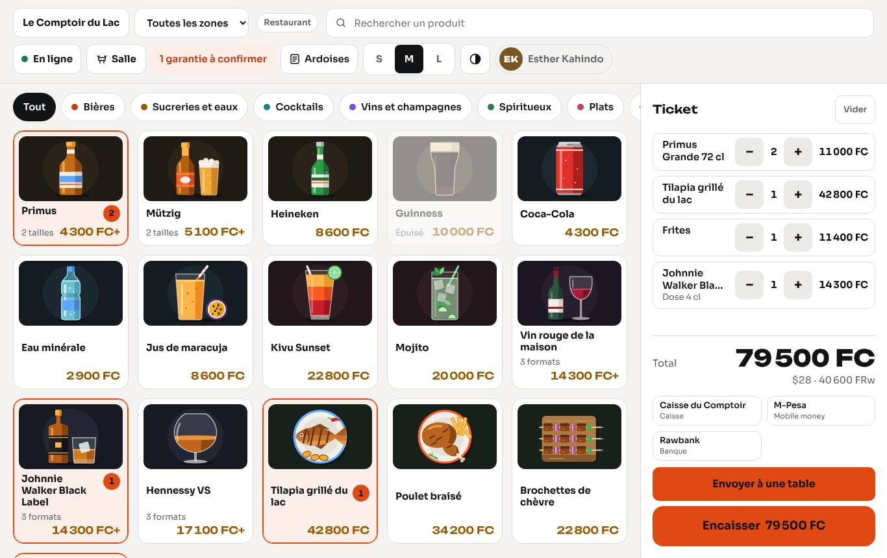
Pour tout le monde
Prise en main
Ce qu'est restau-bar-pos, comment se connecter et se repérer. À lire une fois, quel que soit votre poste.
1Bienvenue
restau-bar-pos réunit trois espaces qui partagent les mêmes produits, les mêmes prix, les mêmes devises et les mêmes comptes.
| Espace | Pour qui | Adresse |
|---|---|---|
| La caisse | Serveurs, caissiers, barmans, agents d'entrée et vestiaire : vendre, encaisser, envoyer en cuisine, contrôler les billets. | monbar.<domaine>/caisse |
| La gestion | Propriétaire, gérant, comptable, RH, magasinier, chef de cuisine : tout le reste, module par module. | monbar.<domaine>/gestion |
| La vitrine | Vos clients : présentation, horaires et menu avec les prix, ouverte par un code QR. | monbar.<domaine>/ |
Chaque client (un bar, un groupe de bars) a sa propre adresse, son sous-domaine, et sa propre base de données. Tout fonctionne dans un navigateur, sur ordinateur, tablette ou téléphone, en français et en anglais. Au-dessus des bars, la console super admin gère la plateforme : clients, abonnements, messagerie (partie III).
Les trois parties de ce manuel
- I. À la caisse : les gestes du service, écran par écran. Les chapitres sont courts et commencent par « Pour… ».
- II. Dans la gestion : régler les établissements, la carte, les droits, suivre les ventes, les ardoises, l'argent, le stock, les achats, le personnel, les soirées et les rapports.
- III. La plateforme : l'installation sur un hébergement LWS et la console super admin.
En fin de manuel : les questions fréquentes, le glossaire et les comptes de démonstration.
La démonstration utilisée dans les captures
Le « Groupe Démo » a deux établissements à Goma : Le Comptoir du Lac, un restaurant-bar (thème jour, clair), et Volcano Club, un nightclub (thème nuit, sombre). Les prix sont en francs congolais (FC) avec l'équivalent en dollars ($). Chaque écran est montré sur ordinateur et, quand c'est utile, sur téléphone.
Le design s'adapte au lieu.Le nightclub et le lounge s'affichent en thème « nuit », le restaurant-bar en thème « jour ». Le bouton ◐ change de thème ; le choix est gardé sur l'appareil.
Devises : toujours la devise locale d'abord
Partout (caisse, reçus, trésorerie, rapports), les montants s'affichent en devise locale (FC) d'abord, puis en dollars, puis dans les autres devises acceptées (par exemple « 79 500 FC · $28 · 40 600 FRw »). Chaque opération d'argent dit toujours dans quel compte (une caisse, un compte mobile money, une banque) et dans quelle devise elle entre ou sort.
2Se connecter et se repérer
La gestion s'ouvre avec un téléphone ou un e-mail et un mot de passe. La caisse s'ouvre avec un PIN de 6 chiffres (chapitre suivant).
Pour se connecter à la gestion
- Ouvrez monbar.<domaine>/gestion.
- Tapez votre e-mail ou votre numéro de téléphone (0810000101 ou +243 81 000 0101), puis votre mot de passe. L'œil à droite du champ montre ce que vous tapez.
- Touchez Se connecter.
Après 5 essais faux, le compte est bloqué 5 minutes. Seules les personnes qui ont un module de gestion reçoivent un mot de passe ; un serveur n'a qu'un PIN de caisse. À la première connexion avec un mot de passe temporaire, la gestion vous envoie d'abord sur Mon compte pour en choisir un nouveau.
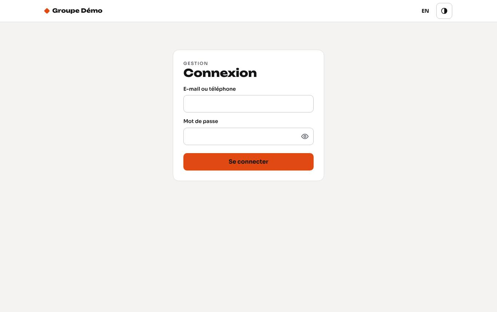
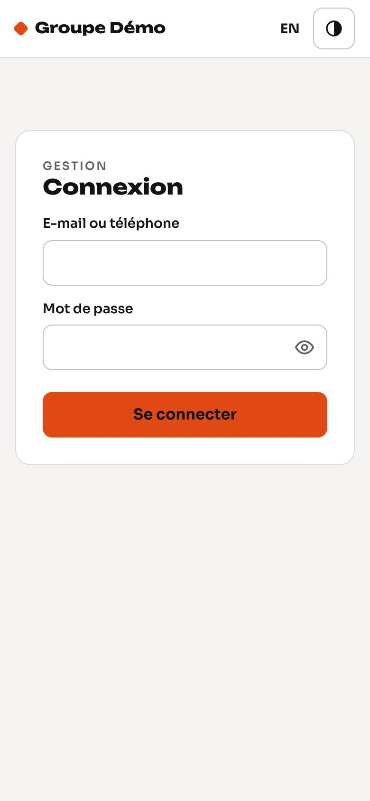
L'écran des modules
Après la connexion, chacun voit seulement les modules de son rôle : Caisse, Ventes, Salle, Cuisine, Achats, Stock, Personnel et paie, Finance, Rapports, Événements, Nuit et entrées, Cashless, Carte et vitrine, Paramètres. Les modules Événements, Nuit et entrées et Cashless n'apparaissent que s'il y a un lounge ou un nightclub. Un module que votre abonnement ne comprend pas n'apparaît pas.
Un bandeau en haut signale ce qui vous attend : une garantie d'ardoise à confirmer, un abonnement qui arrive à échéance (pour le propriétaire)…
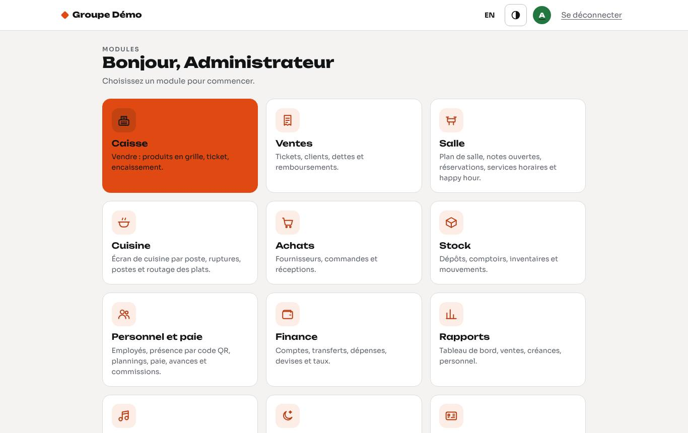
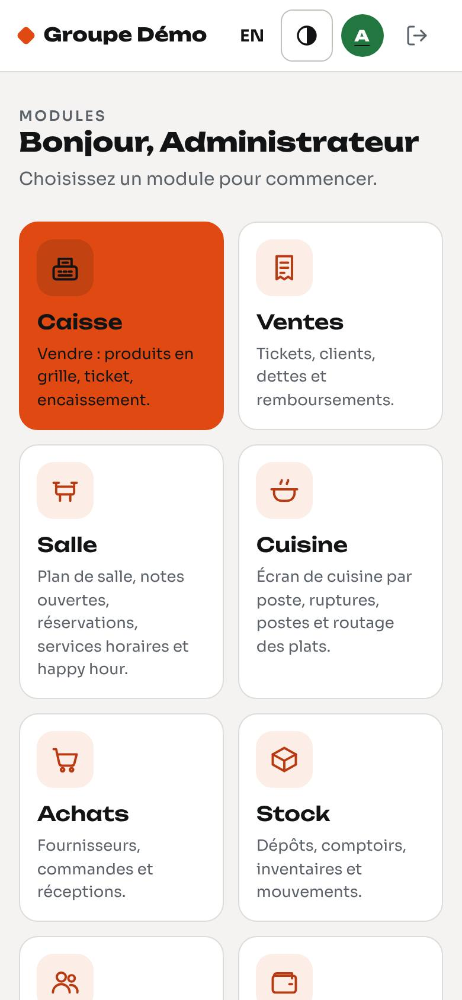
Dans un module
Sur ordinateur, les écrans du module sont dans la barre latérale à gauche ; Modules en haut de cette barre ramène à l'écran des modules. Sur téléphone, ils sont dans la barre du bas. En haut à droite : la langue (EN / FR), le thème ◐, votre photo et Se déconnecter.
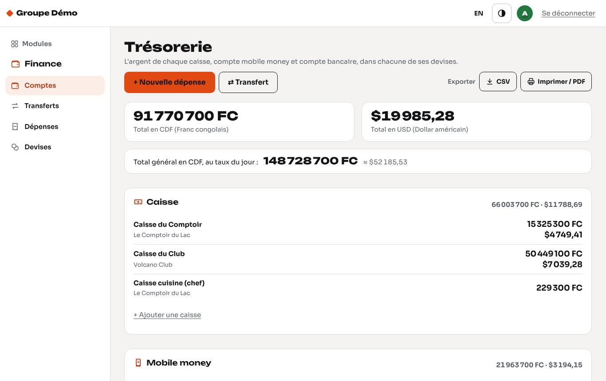
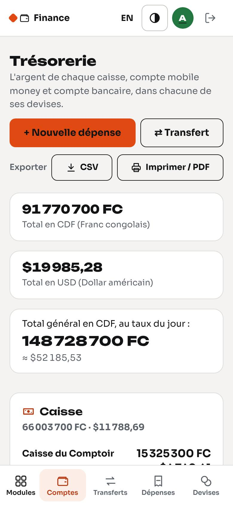
Les listes, les filtres et les exports
- Les listes ont des filtres en haut : période (Aujourd'hui, 7 jours, Ce mois-ci, Mois dernier, Cette année, Tout, ou du… au…), établissement, personne, statut. Touchez Afficher.
- Chacun ne voit que les établissements où il a des droits.
- Les rapports et les listes d'argent ont un groupe Exporter : CSV (tableur) et Imprimer / PDF (chapitre Tableaux de bord et rapports).
Pour changer son nom, sa langue, sa photo ou son mot de passe
Paramètres → Mon compte.
- Photo de profil : elle s'affiche sur l'écran de verrouillage des caisses partagées. Sans photo, ce sont vos initiales sur une couleur.
- Nom et langue de l'interface (Français ou English), appliquée à chaque connexion.
- Mot de passe : l'actuel, puis le nouveau deux fois (10 caractères au moins ; une petite phrase est facile à retenir).
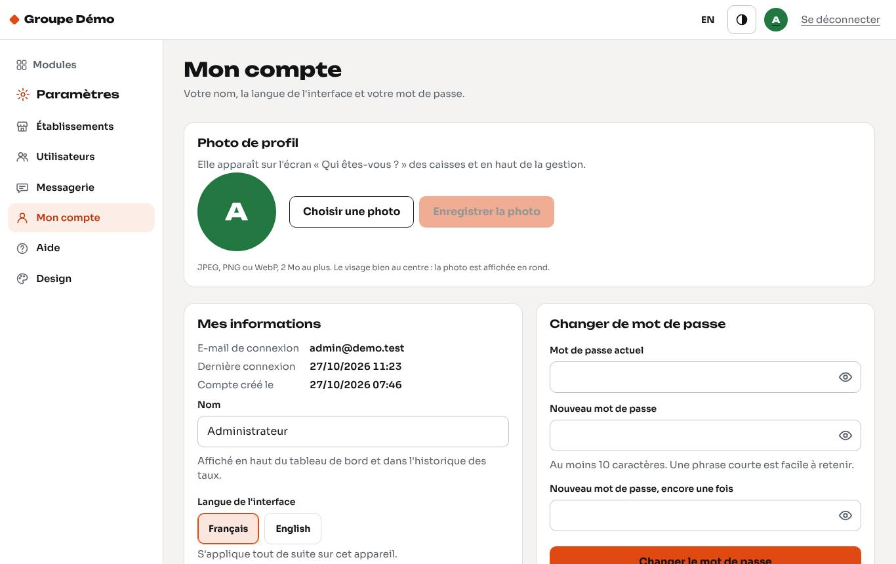
L'aide
Paramètres → Aide ouvre ce manuel dans l'application. Le lien Télécharger le manuel (PDF), en haut, donne la version imprimable.
Partie I
À la caisse
Pour les serveurs, serveuses, caissiers, barmans, agents d'entrée et le vestiaire : ouvrir la caisse, vendre, encaisser en francs et en dollars, mettre à l'ardoise, servir les tables, et continuer sans réseau.
3Ouvrir la caisse
Tout le personnel de vente · le gérant pour autoriser l'appareil
La caisse est un écran à part, sans menu : il sert seulement à vendre. Elle s'ouvre de deux façons.
- Avec son propre compte : depuis l'écran des modules, touchez Caisse (ou ouvrez /caisse). Vous vendez à votre nom sur cet appareil.
- Sur une caisse partagée : la tablette ou le téléphone du bar, autorisé une fois par un gérant. Chacun s'y connecte avec son PIN de 6 chiffres.
Pour faire d'une tablette une caisse partagée (gérant)
- Sur la tablette, connectez-vous à la gestion avec votre compte, puis ouvrez la Caisse de l'établissement.
- Touchez votre nom en haut à droite.
- Touchez Faire de cet appareil une caisse partagée, donnez-lui un nom (« Tablette du bar »), puis Autoriser cet appareil.
Vous êtes déconnecté de l'appareil ; il affiche désormais l'écran de verrouillage. Un appareil perdu se retire dans Paramètres → Utilisateurs → Caisses partagées (chapitre Utilisateurs, rôles et appareils).
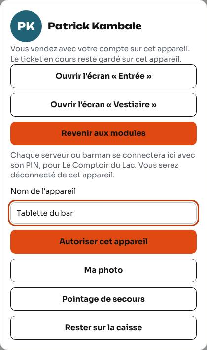
Pour entrer sur une caisse partagée
- Sur l'écran de verrouillage, touchez votre nom (en bas à gauche, avec votre photo).
- Tapez votre PIN de 6 chiffres sur le pavé. La caisse s'ouvre dès le sixième chiffre.
L'écran de verrouillage montre l'heure, la date, le message choisi par l'administrateur et, en bas, la règle de verrouillage de l'établissement. Sur téléphone, les personnes sont en grille et le pavé prend tout l'écran.
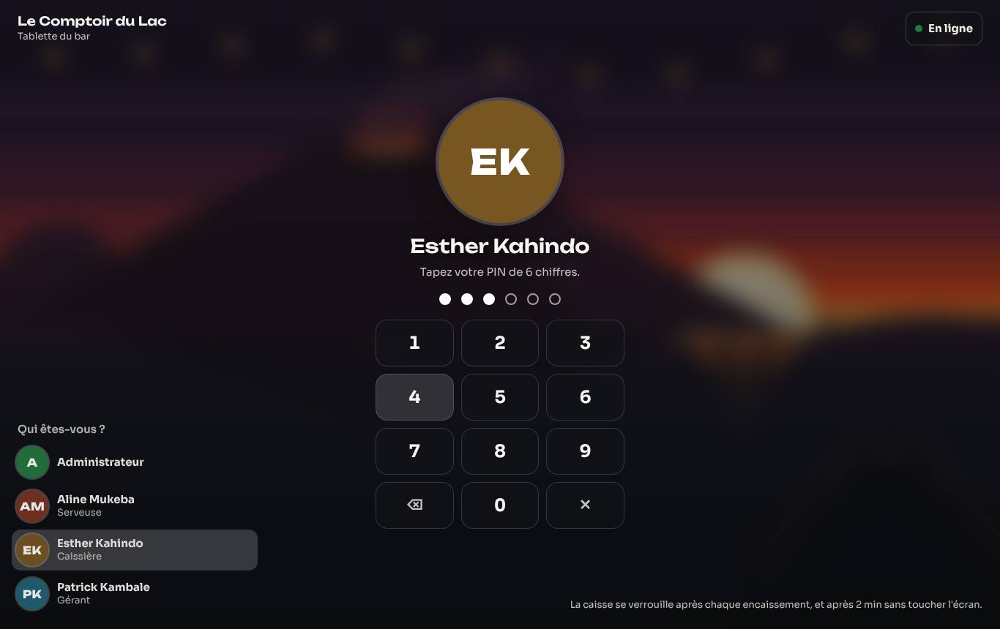
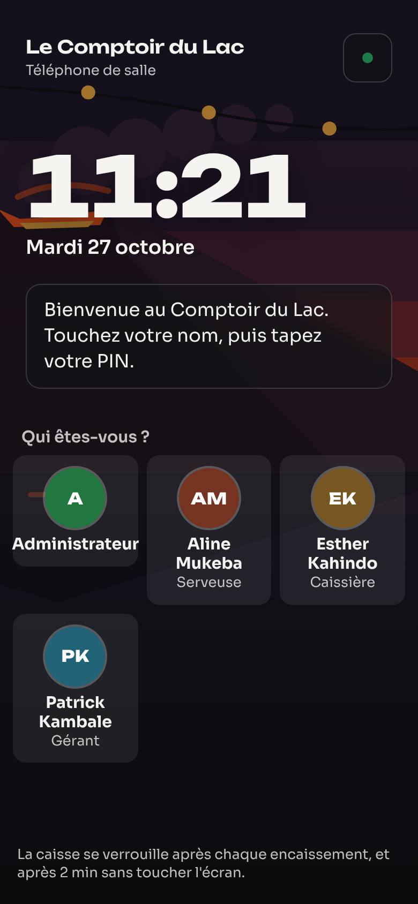
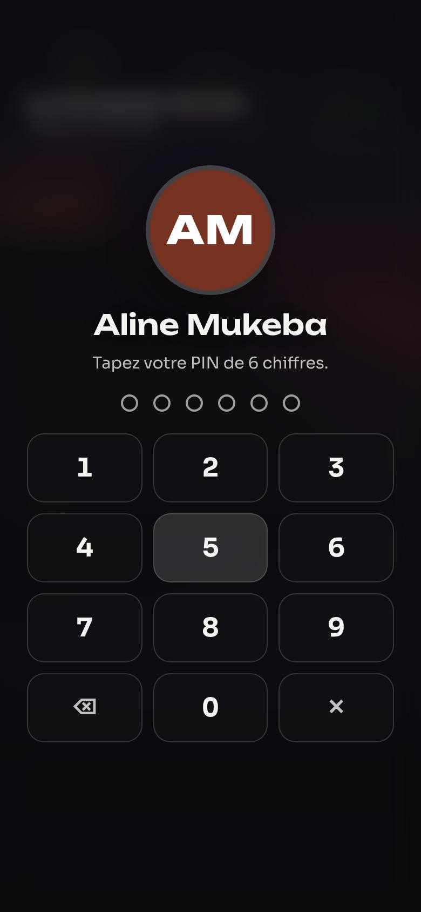
Après 5 PIN faux, le PIN est bloqué.Seul un gérant le débloque (Paramètres → Utilisateurs → la personne). Ne donnez jamais votre PIN : chaque vente, chaque ardoise et chaque remise est enregistrée à votre nom.
Le verrouillage
- Selon le réglage de l'établissement, la caisse se verrouille après chaque encaissement (proposé par défaut) et/ou après quelques minutes sans toucher l'écran (1 à 30 minutes ; un avertissement s'affiche 10 secondes avant).
- Elle se verrouille aussi après « Envoyer » une note à une table : chaque commande reste au nom de qui l'a prise.
- Pour la verrouiller vous-même : touchez votre nom en haut à droite → Verrouiller la caisse.
- Chacun retrouve son propre ticket en cours quand il revient.
Le menu de la personne
Touchez votre nom en haut à droite de la caisse. Selon vos droits, vous y trouvez : Verrouiller la caisse, Clôturer ma caisse (sessions), les autres postes (Ouvrir l'écran « Entrée », « Vestiaire »), Revenir aux modules (pour qui a des modules de gestion : la gestion redemande le mot de passe), Ma photo (prendre un selfie si l'établissement le permet) et Pointage de secours.
4Ouvrir et clôturer sa caisse (sessions)
Caissiers, barmans · si l'établissement utilise les sessions
Quand l'établissement a activé les sessions de caisse, chaque personne qui encaisse compte son fond au début et son argent à la fin. Les écarts de chaque devise sont gardés séparément.
Pour ouvrir sa caisse
- Tant que votre caisse n'est pas ouverte, le bouton Ouvrir ma caisse remplace Encaisser.
- Comptez l'argent de votre caisse, devise par devise (Caisse du Comptoir · CDF, Caisse du Comptoir · USD…). Tapez 0 s'il n'y a rien.
- Touchez Ouvrir la caisse. Sous le bouton Encaisser : « Caisse ouverte depuis 10:11 ».
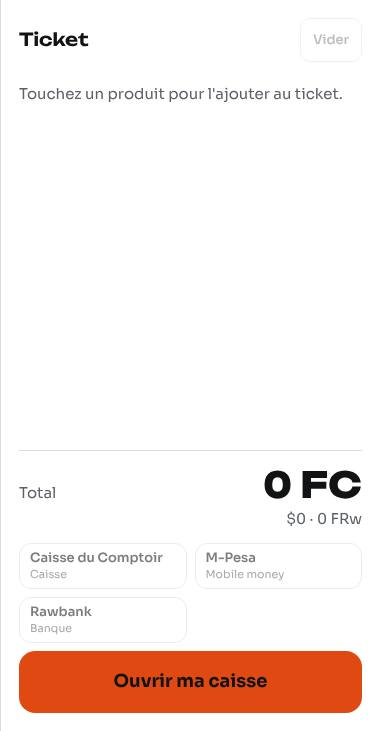
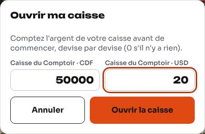
Pour clôturer sa caisse
- Touchez votre nom → Clôturer ma caisse.
- Comptez tout l'argent, devise par devise, et ajoutez une remarque si besoin.
- Touchez Clôturer la caisse. Le rapport de clôture s'affiche : pour chaque caisse et chaque devise, le fond, les entrées et sorties, l'attendu, le compté, et l'écart (Juste, Manquant ou Excédent), puis les tickets, le vendu, les ardoises et les remboursements de la session.
- Imprimer le reçu sort le rapport sur l'imprimante de tickets, puis Terminer.
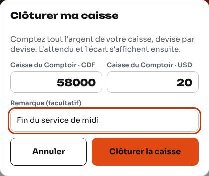
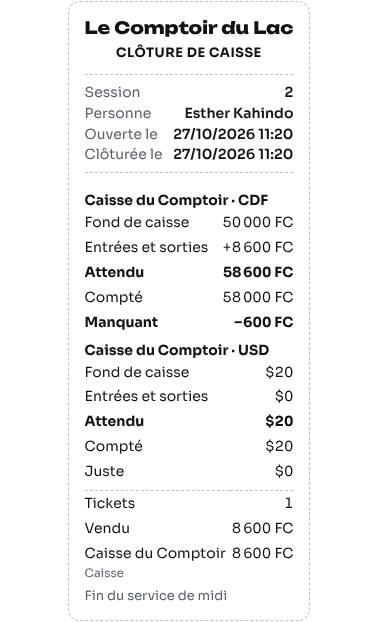
Un manquant peut être retenu sur la paie.Le gérant voit chaque session dans Ventes → Sessions de caisse. Un manquant est proposé en retenue sur le bulletin suivant de la personne, que le gérant peut réduire ou étaler.
5Pointer à la caisse (secours)
Employés sans téléphone · validé par un gérant
D'habitude, on pointe avec son téléphone en scannant le code QR de l'entrée (chapitre Personnel et paie). Sans téléphone, on pointe à la caisse.
Pour pointer son arrivée ou son départ à la caisse
- Touchez votre nom en haut à droite → Pointage de secours.
- Choisissez l'employé : la liste dit pour chacun « arrivée » ou « départ (arrivé à 09:02) ».
- L'employé tape son PIN, puis un gérant choisit son nom et tape son propre PIN.
- Touchez Pointer.
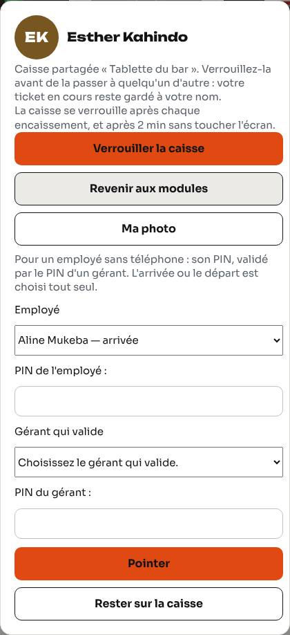
« Pointage obligatoire pour ouvrir la caisse »Si l'établissement l'a choisi, une personne non pointée ne peut ni encaisser ni ouvrir sa session : la fenêtre de pointage s'ouvre d'elle-même. Pour dépointer, une caissière clôture d'abord sa caisse.
6Vendre
Tout le personnel de vente
Les produits sont en grille : un toucher ajoute un article au ticket. Le ticket est à droite sur tablette et ordinateur, dans un panneau sur téléphone.
Le haut de l'écran
- L'établissement et la zone (Salle, Terrasse, Carré VIP…) : la zone applique sa grille de prix. Au carré VIP, ce sont les prix VIP.
- Le service en cours (Restaurant, Bar & terrasse, Club…) et le happy hour quand il est actif (« Happy hour jusqu'à 19:00 ») : ils décident des prix, des catégories vendues et des modules du moment. Quand la cuisine ferme, ses plats disparaissent de la grille.
- La recherche : la touche / y place le curseur, Entrée ajoute le produit s'il est le seul résultat, Échap efface.
- Les boutons du moment : En ligne (réseau), Salle, Ardoises, Cashless, les garanties à confirmer, la taille des tuiles S M L, le thème ◐ et votre nom.
La grille
- Les onglets filtrent par catégorie ; une catégorie qui a des sous-catégories ouvre une seconde rangée (« Toutes », « Locales », « Importées »). Chaque catégorie garde sa couleur partout.
- La pastille d'une tuile dit combien d'articles de ce produit sont déjà dans le ticket.
- Un produit épuisé est grisé et ne se touche pas : épuisé à la main dans le catalogue, en rupture en cuisine, ou plus en stock quand l'établissement bloque les ventes sans stock.
- 5 tuiles par ligne sur tablette, 3 sur téléphone. Le nightclub démarre en grandes tuiles.
Pour vendre un produit à plusieurs tailles ou formats
Une tuile « 2 tailles » ou « 3 formats » affiche le plus petit prix suivi de « + ». Touchez-la : une fenêtre propose chaque taille et chaque format avec son prix. Touchez le bon.
- Taille : une bouteille différente, avec son propre stock (Primus Petite 33 cl, Grande 72 cl).
- Format : une façon de servir la même bouteille (whisky en dose de 4 cl, double de 8 cl ou bouteille de 70 cl).
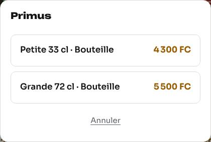
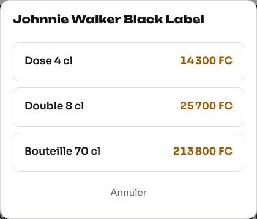
Le ticket
- − et + changent la quantité ; à zéro, la ligne disparaît. Vider efface tout.
- Le total s'affiche en devise locale, avec en dessous l'équivalent en dollars et dans les autres devises acceptées. Les prix fixés en francs (5 500 FC la Grande Primus) sont respectés.
- Sous le total : les raccourcis de paiement (le compte principal de chaque type : Caisse du Comptoir, M-Pesa, Rawbank) et, si vous en avez le droit, Crédit client (l'ardoise).
- Envoyer à une table garde la commande sur une note sans la payer (chapitre Les tables et les notes) ; Encaisser ouvre le paiement.
Un serveur sans le droit d'encaisserprépare le ticket ou l'envoie à une table, puis appelle un caissier : le bouton Encaisser reste grisé avec le message « Votre rôle permet de préparer le ticket, pas de l'encaisser ».
Sur téléphone
La grille prend tout l'écran. La barre du bas résume le ticket (« 3 articles · voir le ticket » et le total) : touchez-la pour ouvrir le ticket, ✕ pour le refermer. Les boutons du haut défilent de gauche à droite.
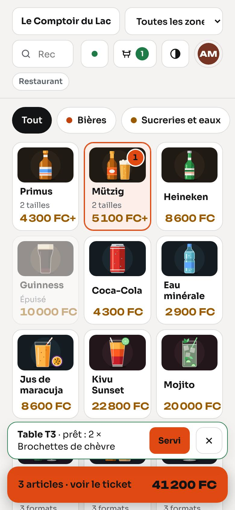
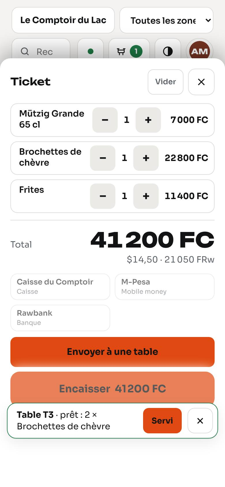
7Encaisser
Caissiers, barmans, gérants
Le client paie en francs, en dollars ou les deux ; pour chaque devise, vous touchez directement le compte qui reçoit l'argent.
Pour encaisser un ticket
- Touchez Encaisser, ou un raccourci sous le total (par exemple M-Pesa : la fenêtre s'ouvre avec ce compte déjà choisi).
- Dans Payer en, choisissez FC, $ ou Les deux.
- Pour chaque devise, tapez le montant reçu et touchez le compte qui le reçoit, rangé sous son type : Caisse (Caisse du Comptoir…), Mobile money (M-Pesa, Airtel Money…), Banque (Rawbank, Equity BCDC…). Seuls les comptes de l'établissement et les comptes communs qui tiennent cette devise sont proposés.
- Pour une caisse en espèces, des montants rapides aident : Montant exact, puis les billets ronds au-dessus.
- Le bas de la fenêtre dit Réglé, Reste à payer (dans chaque devise) ou Monnaie à rendre. Choisissez la devise de la monnaie dans Rendre la monnaie en.
- Touchez Valider l'encaissement.
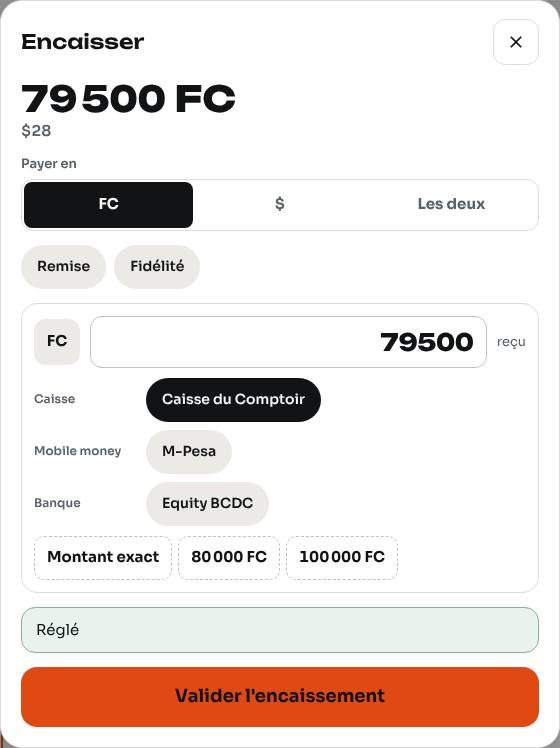
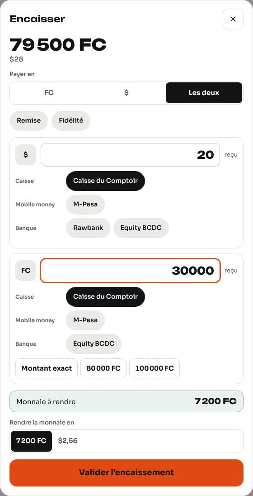
Comment le reste est calculé
Chaque devise a son propre total (79 500 FC ou 28 $ pour le même ticket). Un paiement couvre une part du ticket dans sa devise : 20 $ sur 28 $, c'est 71 %. Le reste s'affiche dans chaque devise, arrondi vers le haut ; la monnaie se rend en espèces, arrondie vers le bas, et sort d'une caisse qui tient la devise rendue. Le serveur refait tous les calculs et refuse ce qui ne colle pas.
Le reçu
Après la validation, le reçu s'affiche : numéro du ticket (CDL-000805), date, qui a servi, lignes, total en FC puis « Soit $28 · 40 600 FRw », chaque paiement avec son compte, et la monnaie rendue.
- Imprimer le reçu l'envoie à l'imprimante de tickets (80 mm).
- Nouvelle vente vide le ticket. Sur une caisse partagée qui se verrouille après chaque encaissement, le bouton s'appelle Terminer et la caisse revient à « Qui êtes-vous ? ».
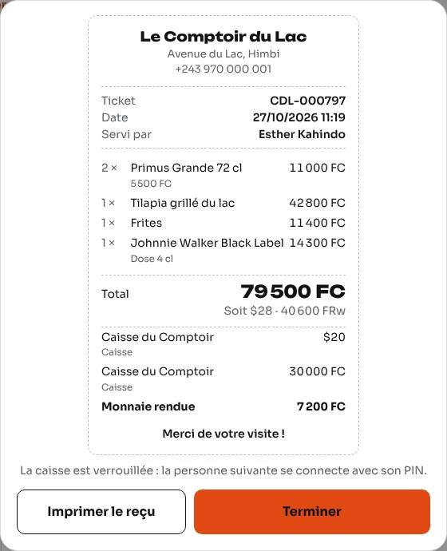
Jamais deux fois la même vente.Si le réseau hésite ou si vous touchez deux fois, la vente n'est enregistrée qu'une fois (chaque ticket a sa clé unique). En cas de « Pas de réponse du serveur », réessayez simplement.
8Remises et offerts
Selon le droit « Accorder une remise » et la limite du rôle
Une remise se fait sur tout le ticket ou sur une ligne, en pourcentage, en montant ou en « offert », toujours avec un motif.
Pour faire une remise
- Dans la fenêtre Encaisser, touchez Remise.
- Sur quoi ? : Tout le ticket ou une ligne.
- Le type : %, Montant (dans une devise du ticket) ou Offert (l'article devient gratuit).
- Le motif : Geste commercial, Client VIP, Erreur de service, Personnel, Promotion, Autre ; une précision si besoin.
- Touchez Appliquer. La fenêtre montre le sous-total, la remise et le nouveau total ; Retirer l'enlève.
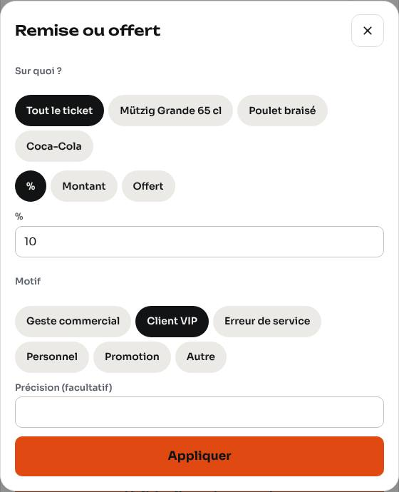
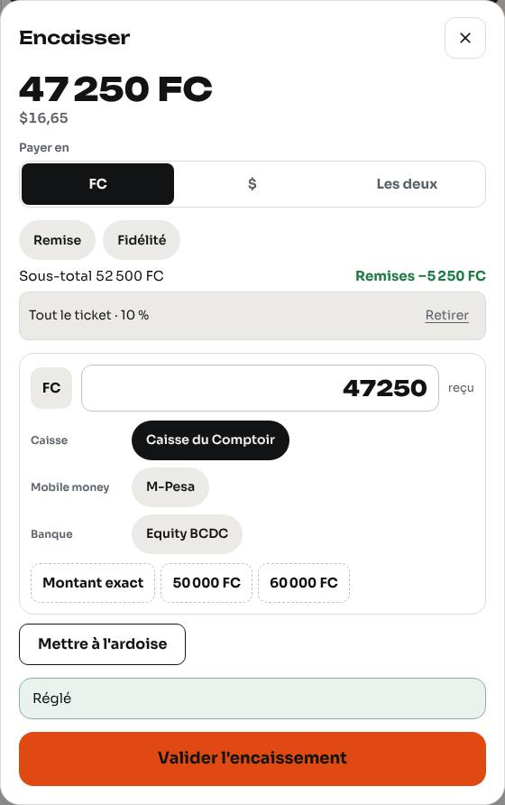
Au-delà de votre limite : le PIN d'un supérieur
Chaque rôle a un pourcentage maximal (Ventes → Remises et offerts). Au-delà, la fenêtre affiche « Au-delà de votre limite (10 %) : un supérieur tape son PIN ». Le supérieur touche son nom et tape son PIN sur votre appareil ; le journal garde les deux noms.
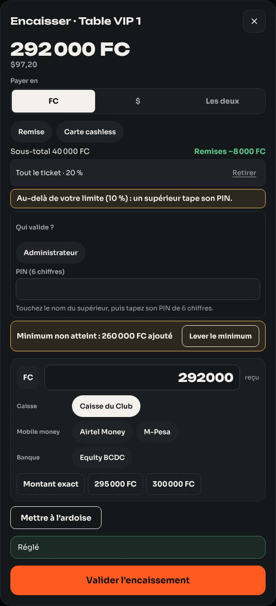
Un article offert sort quand même du stock, comme une perte « offert ». Les remises apparaissent sur le reçu, sur la fiche de la vente et dans le rapport des remises.
9Mettre à l'ardoise
Selon le droit « Accorder un crédit client »
Le client paie une partie ou rien ; le reste va à son ardoise, en FC ou en $. La dette engage la personne qui a servi, sauf si un garant l'accepte.
Pour mettre une note à l'ardoise
- Touchez Crédit client sous le total, ou Mettre à l'ardoise dans la fenêtre Encaisser.
- Cherchez le client par son nom ou son téléphone. S'il n'existe pas, touchez Nouveau client : nom, téléphone, rappels par WhatsApp (sinon SMS), puis Créer le client.
- La carte du client dit ce qu'il doit déjà, et s'il est en retard ou si son crédit est bloqué.
- Le montant à l'ardoise est proposé (tout le reste à payer), dans la devise choisie. Pour un paiement partiel, ajoutez le paiement au-dessus et réduisez l'ardoise.
- Servi par : touchez la personne qui a servi le client. La dette l'engage.
- Garant (facultatif) : un autre agent, le gérant ou un promoteur qui se porte garant. Il confirmera plus tard ; d'ici là, la personne qui a servi reste responsable.
- À régler avant le : l'échéance, proposée selon le délai de l'établissement (7 jours par défaut).
- Touchez Valider l'encaissement. Le reçu indique « À l'ardoise · Joséphine Kahambu · avant le 03/11/2026 ».
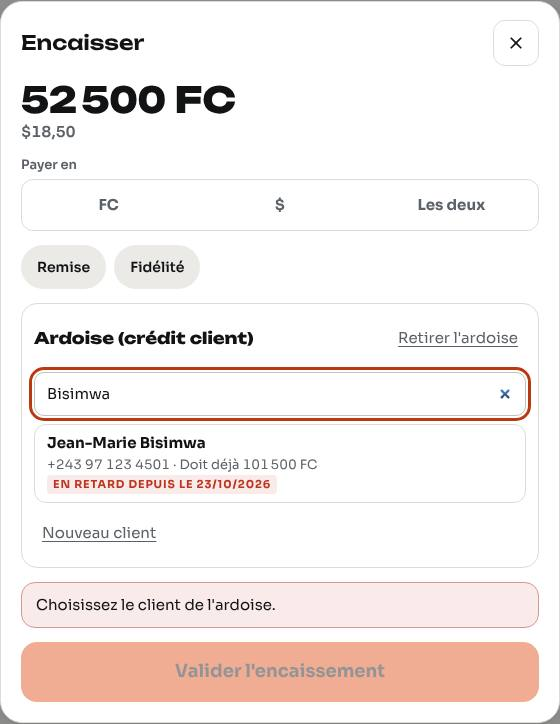
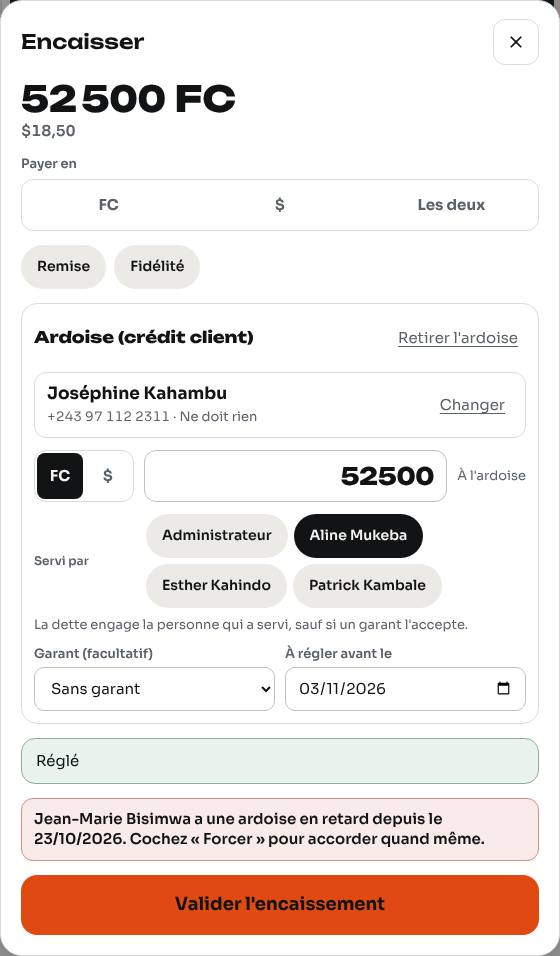
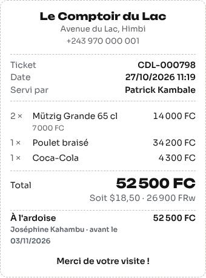
Plafond dépassé, retard, crédit bloqué : « Forcer »
La caisse refuse l'ardoise si le client dépasse son plafond, a une ardoise en retard ou a son crédit bloqué. Une personne qui a le droit de décider sur les dettes (gérant) voit alors la case Forcer (plafond ou retard) : cochée, l'ardoise passe, et c'est inscrit au journal. Les autres appellent le gérant.
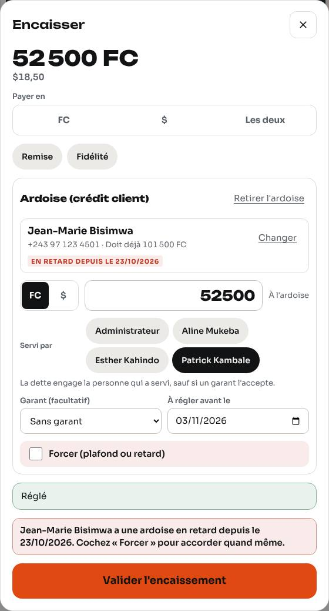
Pas de monnaie sur une ardoise.Les rappels partent seuls, par SMS ou WhatsApp, la veille de l'échéance puis après (chapitre Clients, dettes et relances). Il n'y a pas de bouton « Relancer ».
10Rembourser une ardoise
Selon le droit « Encaisser un remboursement de dette à la caisse »
Un client passe régler ce qu'il doit : on l'encaisse depuis le bouton « Ardoises » de la caisse.
Pour encaisser un remboursement
- Touchez Ardoises en haut de la caisse.
- Cherchez le client par son nom ou son téléphone. Ses ardoises ouvertes s'affichent, de la plus ancienne à la plus récente, celles en retard en rouge.
- Choisissez la devise, tapez le montant (ou Tout : 142 500 FC) et touchez le compte qui reçoit l'argent.
- Touchez Encaisser le remboursement.
Le paiement règle d'abord les ardoises les plus anciennes, converti au taux du jour s'il est dans une autre devise. Un montant plus grand que la dette est refusé. Le reçu montre chaque ardoise réglée et le reste dû. Autre remboursement passe au client suivant.
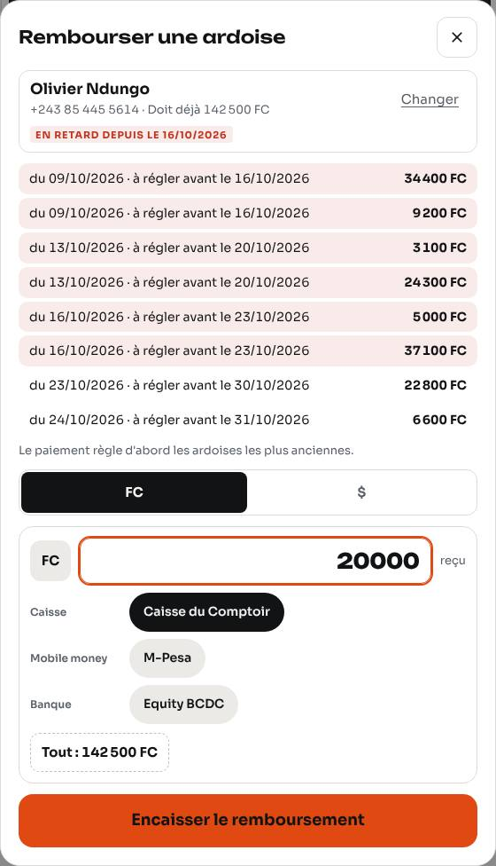
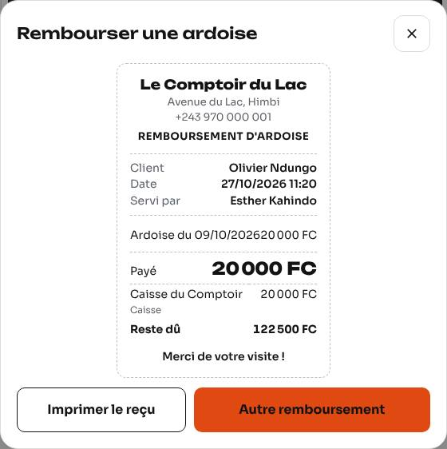
11Confirmer une garantie
Toute personne désignée comme garant
Quand quelqu'un vous désigne garant d'une ardoise, la demande s'ouvre à votre prochaine connexion à la caisse, et dans la gestion.
- J'accepte : vous devenez responsable de cette dette si le client ne paie pas.
- Je refuse : rien ne change, la personne qui a servi reste responsable.
- Plus tard : la demande reste en attente ; le bouton « 1 garantie à confirmer » en haut de la caisse la rouvre.
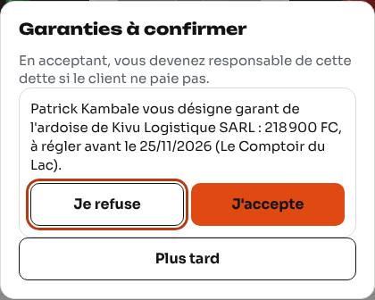
12Les tables et les notes
Serveurs, serveuses, caissiers · module Salle
Une commande peut partir à une table sans être payée : c'est une note ouverte. Plusieurs serveurs y ajoutent, la cuisine reçoit les plats, et on encaisse à la fin.
Pour envoyer une commande à une table
- Composez le ticket comme d'habitude.
- Pour une précision, touchez le nom de la ligne : cuisson (Bleu, Saignant, À point, Bien cuit), Sans piment, Sans glaçons, À emporter…, une autre précision, et surtout l'allergie (« arachides ») qui s'affiche en évidence en cuisine. Cochez À lancer plus tard pour un plat qui attend (le plat principal après les entrées).
- Touchez Envoyer à une table. Le plan de la salle s'ouvre : touchez la table (ou une note sans table, par exemple « Bar — Patrick »).
Les plats partent au poste de leur catégorie (grill, friteuse, bar à cocktails…), les boissons au bar. Sur une caisse partagée, la caisse se verrouille ensuite.
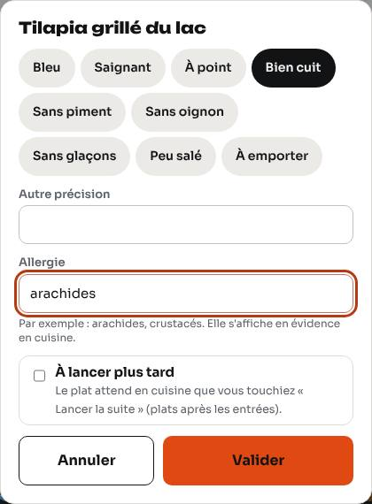
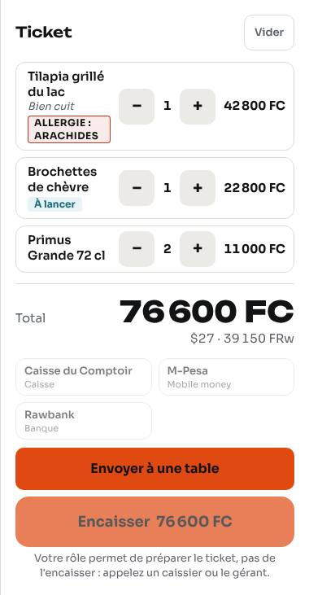
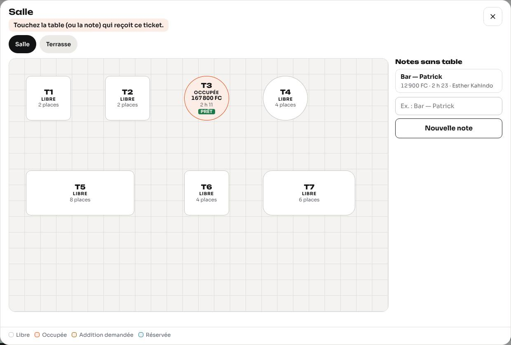
Le plan de la salle
Le bouton Salle en haut de la caisse ouvre le plan de chaque zone. Chaque table dit son état : libre, occupée (avec le montant et la durée de la note), addition demandée, réservée ; « PRÊT » signale un plat prêt. À droite, les notes sans table et Nouvelle note. Vente au comptoir revient au ticket ordinaire.
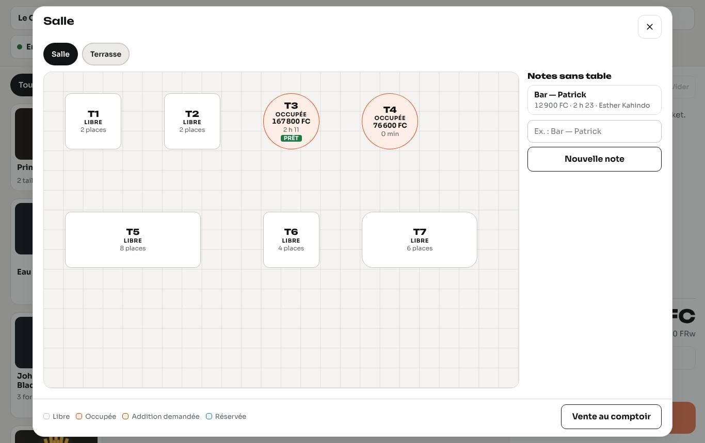
Pour reprendre une note
Touchez la table : sa note s'affiche dans le ticket, avec en tête la table, le serveur et la durée. Chaque ligne déjà envoyée dit qui l'a commandée, à quelle heure, et son état en cuisine (Reçu, En préparation, Prêt, Servi, ou À lancer). Les nouveaux articles se mettent en dessous ; Envoyer les ajoute à la note.
- Lancer la suite (1) : envoie en cuisine les plats « à lancer plus tard ».
- Addition : imprime la pré-note (80 mm) et passe la table en « addition demandée ».
- Partager, Transférer (vers une autre table), Fusionner (deux notes en une).
- Encaisser : la même fenêtre de paiement qu'au comptoir. Les prix sont ceux du moment de la commande (happy hour, VIP).
- ✕ en haut de la note revient au comptoir sans rien changer.
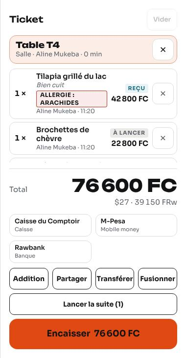
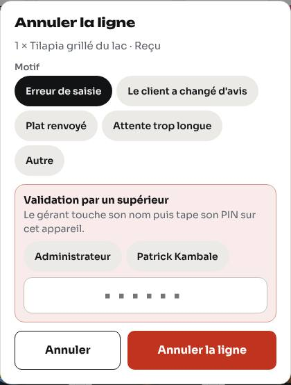
Pour annuler un article déjà envoyé
Touchez ✕ sur la ligne, choisissez le motif (Erreur de saisie, Le client a changé d'avis, Plat renvoyé, Attente trop longue, Autre) et, sans le droit « Annuler un article déjà envoyé », faites taper le PIN d'un supérieur. L'article annulé après son lancement compte comme une perte dans le stock ; le journal garde les deux noms.
Pour partager l'addition
- Touchez Partager.
- Par articles : choisissez avec + et − ce que paie la première personne ; ou En parts égales : choisissez le nombre de parts.
- Touchez Encaisser la sélection : c'est une vente à part. Recommencez pour la part suivante. Une part égale peut contenir une fraction d'article (½ Tilapia).
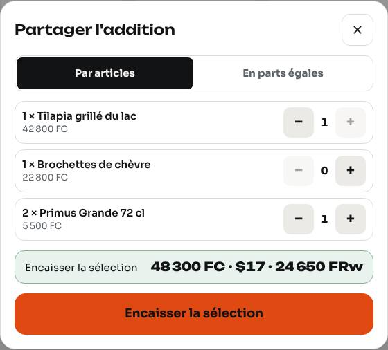
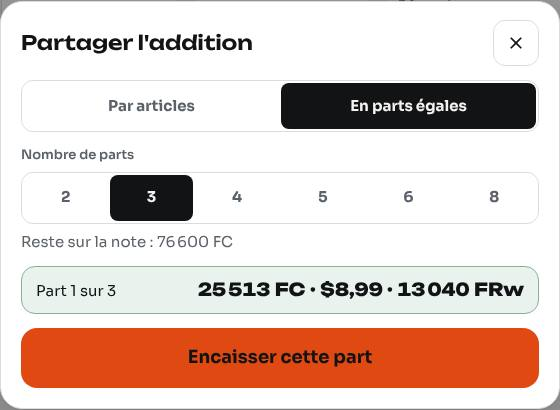
Quand un plat est prêt,le serveur qui l'a commandé est prévenu sur sa caisse : un bandeau « Table T3 · prêt : 2 × Brochettes de chèvre » avec le bouton Servi, et une pastille sur le bouton Salle.
Stock bloquéSi l'établissement bloque les ventes sans stock, un article épuisé ne s'ajoute plus et ne s'envoie plus ; mais un article déjà servi sur une note se paie toujours.
13L'écran de cuisine
Chefs, cuisiniers, barmans d'un poste · module Cuisine
Chaque commande arrive sur l'écran de son poste, du plus ancien au plus récent, et passe de « reçu » à « servi ».
L'écran s'ouvre depuis le module Cuisine (Écran de cuisine, /caisse/cuisine) par une personne qui a le droit de le voir, ou sur un écran autorisé par un gérant (le lien Faire de cet écran un écran de cuisine, comme une caisse partagée).
- Choisissez le poste en haut (Grill, Friteuse, Bar à cocktails) ou Tous les postes.
- Chaque carte montre la table, la zone, le serveur, le temps écoulé, les plats avec leurs précisions et l'allergie en rouge, et les plats « à suivre » que le serveur lancera.
- Touchez Commencer, puis Prêt (le serveur est prévenu), puis Servi. Retour revient à l'état précédent, Imprimer sort le bon.
Une carte passe « En retard » au-delà du temps réglé pour le poste. En haut : Son (un signal à chaque commande), Impression auto (le bon de 80 mm sort tout seul), Ruptures.
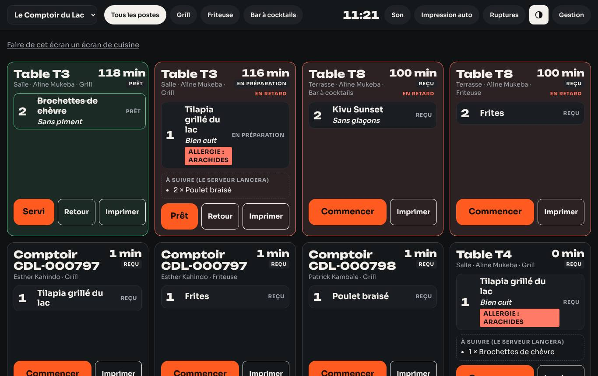
Pour signaler une rupture
Touchez Ruptures, puis le plat qui manque. En quelques secondes, il est grisé sur toutes les caisses ; touchez-le de nouveau quand il revient.
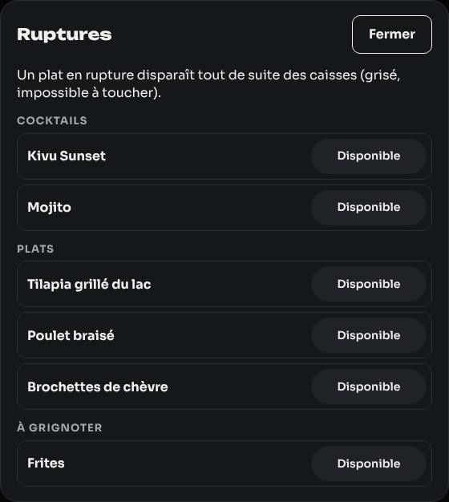
14Bouteilles, formules et minimum VIP
Barmans, serveurs et superviseurs d'un lounge ou d'un nightclub
Au nightclub, la caisse est en thème nuit, en grandes tuiles, et propose les formules (une bouteille avec des softs au choix) et le minimum de consommation des tables VIP.
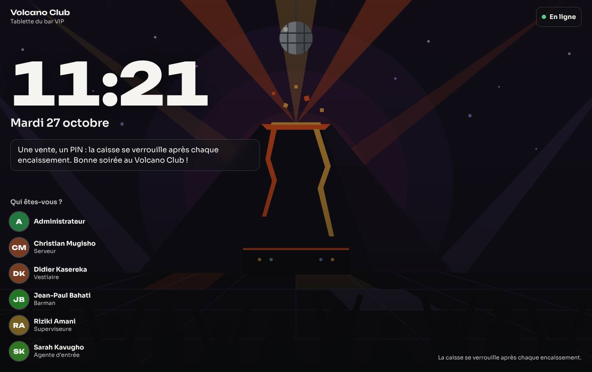
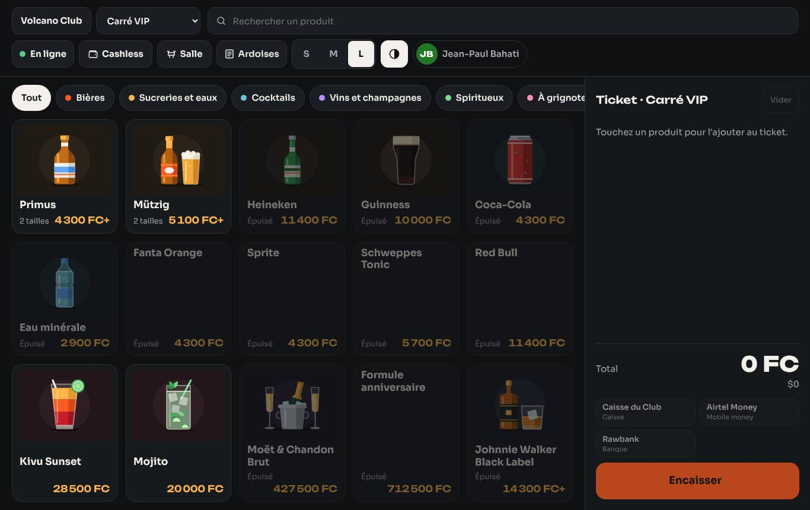
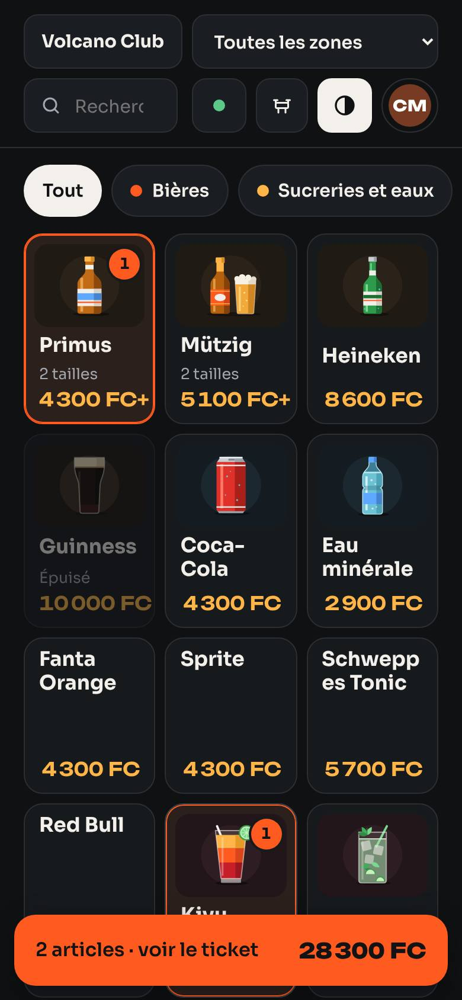
Pour vendre une formule
- Touchez la formule (« Johnnie Walker Black 70 cl + 4 softs »).
- La bouteille est comprise ; choisissez les softs avec + et − jusqu'à ce que « Choisissez 4 » soit complet. Un soft épuisé est grisé.
- Touchez Ajouter au ticket. La ligne du ticket détaille la composition ; chaque composant sort du stock.
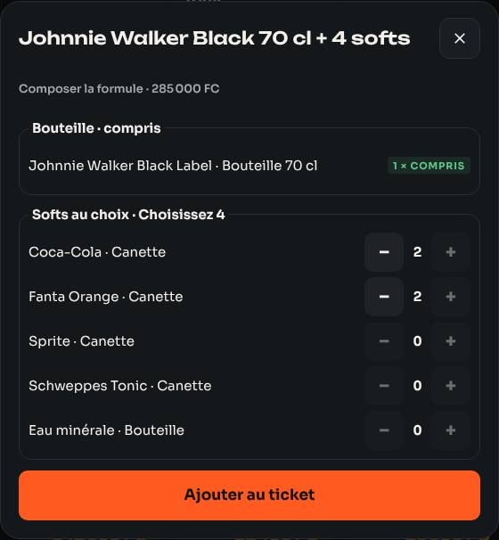
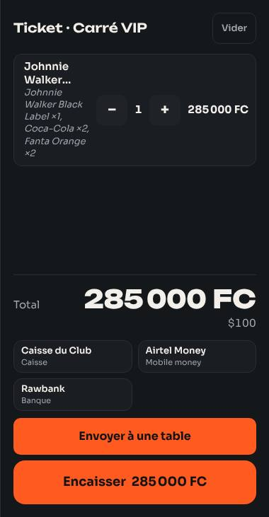
Le minimum de consommation
Une zone ou une table peut avoir un minimum (300 000 FC au carré VIP). La note de la table montre sa progression (« Minimum 300 000 FC : encore 260 000 FC »). À l'encaissement, si le minimum n'est pas atteint, la ligne « Minimum non atteint : 260 000 FC ajouté » s'ajoute au total (ou un simple avertissement, selon le réglage).
Lever le minimum le retire : il faut le droit « Lever le minimum de consommation d'une table », sinon un supérieur choisit son nom et tape son PIN. Garder le minimum revient en arrière.
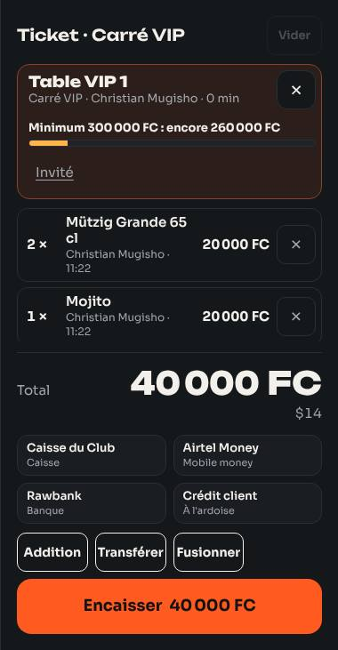
15Les entrées, les billets et les invités
Agents d'entrée · poste « Entrée »
Le poste de la porte vend les entrées (un billet à code QR par personne), contrôle les billets et pointe la liste d'invités.
L'agent d'entrée arrive directement sur ce poste après son PIN (sinon : son nom → Ouvrir l'écran « Entrée », ou /caisse/entree). Les tuiles sont les tarifs de la soirée : Entrée, Entrée VIP, early bird, réduit, gratuit (Ladies night avant minuit). En haut, les compteurs de la nuit : billets, entrés, refus.
Pour vendre des entrées
- Touchez le tarif autant de fois qu'il y a de personnes.
- Touchez Encaisser et payez comme au bar.
- Le reçu contient un billet par entrée, avec son code QR (B000185-…), le tarif et la soirée. Imprimez-le : chaque billet n'est valable qu'une fois.
Pour contrôler un billet
- Touchez Contrôle.
- Touchez Caméra et présentez le code QR, ou tapez le code du billet puis Valider.
- La réponse est claire : Entrée validée (vert), Billet déjà utilisé (avec l'heure et la personne du premier passage), Billet annulé, Billet d'une autre soirée ou Billet inconnu.
- Billet suivant.
Pour faire entrer un invité
- Touchez Invités : la liste de la soirée s'affiche, avec le promoteur, l'entrée (gratuite ou réduite) et le nombre déjà entré (« 0 / 2 entrés »).
- Cherchez le nom ou le téléphone, choisissez combien de personnes entrent (1, 2, 3 pour un invité « +2 ») et touchez Entrer.
- Une entrée gratuite donne un billet gratuit à imprimer ; une entrée réduite s'ajoute au ticket : encaissez-la.
Les entrées comptent dans les recettes de la soirée et dans les commissions des promoteurs.
16Le vestiaire
Vestiaire · poste « Vestiaire »
Chaque objet déposé reçoit un ticket numéroté à code QR ; les frais éventuels s'encaissent comme une vente.
Pour déposer un objet
- Touchez la tuile Dépôt au vestiaire (avec ses frais) — ou Déposer sans frais si le vestiaire est gratuit.
- Décrivez l'objet (« Veste noire et casque ») et touchez Valider.
- Encaissez les frais. Le reçu contient le ticket de vestiaire (N° 4, code QR) : donnez-le au client.
Pour rendre un objet
Touchez Rendre, scannez le ticket avec la caméra ou tapez son numéro, puis Valider : « Ticket n° 4 rendu ». Un ticket déjà rendu est signalé. Au vestiaire liste les objets encore déposés, avec leur description et l'heure.
17Les cartes cashless
Caissiers, barmans, agents d'entrée · selon les droits « recharger » et « gérer »
Une carte ou un bracelet à code QR garde un solde dans chaque devise. Le client la recharge, paie avec, et se fait rembourser ce qui reste.
Pour lire une carte
Touchez Cashless en haut de la caisse, puis Caméra (ou tapez le code imprimé sur la carte, par exemple C0001-S2ATCYBRUL) et Valider. La carte s'affiche avec son porteur et son solde par devise.
Pour recharger une carte
- Sur la carte lue, touchez Recharger.
- Choisissez la devise, tapez le Montant à charger, touchez Recharger.
- La fenêtre d'encaissement s'ouvre : le client paie en espèces, M-Pesa… comme pour une vente. L'argent entre en trésorerie ; le reçu « Recharge cashless » donne le nouveau solde.
Pour payer avec une carte
- Dans la fenêtre Encaisser, touchez Carte cashless et lisez la carte.
- Touchez Carte cashless · $18,50 : la carte paie ce qu'elle peut, jamais plus que son solde.
- Le reste se paie avec les autres moyens, comme d'habitude. Retirer enlève la carte du paiement.
Rembourser, bloquer, créer
- Rembourser le solde : le client rend sa carte et reçoit ce qui reste, depuis une caisse (sortie de trésorerie).
- Bloquer (perdue) : la carte ne paie plus ; Débloquer si on la retrouve.
- Nouvelle carte : carte ou bracelet, porteur facultatif, puis Imprimer la carte. Les cartes se préparent aussi par planches dans la gestion.
Ces trois actions demandent le droit de gérer le cashless (gérant). Un paiement par carte ne crée pas de mouvement de trésorerie : l'argent y est entré à la recharge.
18La fidélité
Tout le personnel qui encaisse · si l'établissement l'a activée
Le client identifié à l'encaissement gagne des points selon le montant ; il les échange contre une remise ou un article offert.
- Dans la fenêtre Encaisser, touchez Fidélité.
- Cherchez le client par son nom ou son téléphone. Son solde de points s'affiche (« Jean-Marie Bisimwa · 221 points »).
- S'il a assez de points, touchez une récompense (« Un Mojito offert · 60 pts », « 10 % sur le ticket · 100 pts ») ou Aucune récompense pour seulement gagner des points.
- Encaissez : les points gagnés (et ceux dépensés pour une récompense) s'inscrivent sur la fiche du client.
19Sans réseau
Tout le personnel de la caisse du bar
Quand le réseau coupe, la caisse du bar continue de vendre au comptoir. Les ventes attendent sur l'appareil et partent seules au retour du réseau.
Ce qui marche sans réseau
- La caisse se recharge depuis l'appareil (si elle a déjà été ouverte avec le réseau).
- Vendre au comptoir et encaisser sur les comptes : caisse, mobile money, banque, en FC, en $ ou les deux, avec la monnaie.
- Sur une caisse partagée, entrer avec son PIN, pour les personnes déjà entrées une fois avec le réseau sur cet appareil.
Ce qui demande le réseau
L'ardoise et les remboursements, le cashless, la fidélité, les tables et notes et l'envoi en cuisine, les entrées et le vestiaire, l'ouverture et la clôture de session, une remise au-delà de votre limite. Ces boutons sont grisés, avec la raison.
Pour vendre sans réseau
- L'indicateur en haut passe à Hors ligne.
- Vendez et encaissez comme d'habitude. Le reçu est un reçu provisoire « En attente d'envoi », numéroté HL-…, imprimable.
- L'indicateur affiche le nombre de ventes en attente (« Hors ligne · 1 »). Ne fermez pas le navigateur de l'appareil.
- Au retour du réseau, les ventes partent toutes seules (ou par Envoyer maintenant dans la fenêtre de l'indicateur). La caisse se verrouille et chacun retape son PIN.
Rien n'est compté deux fois.Chaque vente garde sa clé unique. Le serveur l'enregistre à l'heure de l'appareil (jamais plus de 72 h avant), recalcule les prix avec la grille de cette heure-là, et garde l'écart éventuel. Elle n'est jamais refusée pour le stock, la session ou le pointage : c'est noté sur la vente. Dans la gestion, ces ventes portent le badge « Hors ligne ».
20Reçus et impression
Tout le personnel
Tout ce qui s'imprime à la caisse est au format des imprimantes de tickets (80 mm).
| Document | Où | Contenu |
|---|---|---|
| Reçu de vente | Après Encaisser : Imprimer le reçu | Établissement, ticket, date, qui a servi, zone, lignes, remises, total en FC puis $, paiements, monnaie, ardoise. |
| Addition (pré-note) | Note d'une table : Addition | Les lignes de la note et le total, avant le paiement. |
| Bon de cuisine | Écran de cuisine : Imprimer ou impression auto | Table, serveur, plats, précisions, allergie. |
| Billets d'entrée | Après l'encaissement d'entrées, ou un invité | Un billet à code QR par personne. |
| Ticket de vestiaire | Après un dépôt | Numéro, description, code QR. |
| Recharge cashless, remboursement d'ardoise | Après l'opération | Montant, compte, nouveau solde ou reste dû. |
| Rapport de clôture | Après Clôturer ma caisse | Fond, attendu, compté et écart par caisse et par devise. |
| Reçu provisoire | Vente sans réseau | « En attente d'envoi », numéro HL-…. |
L'impression passe par le navigateur : choisissez une fois l'imprimante de tickets de l'appareil. Un reçu se réimprime plus tard depuis la fiche de la vente, dans la gestion.
Partie II
Dans la gestion
Pour le propriétaire, le gérant, le comptable, la RH, le magasinier et le chef de cuisine : régler, suivre et décider, module par module. Chacun ne voit que les modules, les écrans et les établissements de ses rôles.
21Démarrer : l'ordre conseillé
Propriétaire, gérant
Pour une nouvelle instance, réglez les choses dans cet ordre ; chaque étape sert à la suivante.
- Devises et taux : la devise de référence (USD), la devise locale (CDF) et le taux du jour.
- Établissements : informations, horaires, devises acceptées, zones (salle, terrasse, carré VIP), délai des ardoises.
- Trésorerie : les comptes (Caisse du Comptoir, M-Pesa, Rawbank…) avec leurs devises et leur solde d'ouverture.
- Carte et vitrine : catégories, produits, tailles, formats et prix ; photos ; codes QR.
- Stock : dépôts et comptoirs, routage des ventes, réglages, puis les premières réceptions ou un inventaire.
- Utilisateurs : les personnes, leurs rôles et leur PIN ; les caisses partagées et leur verrouillage.
- Selon vos besoins : salle et cuisine, nuit et entrées, personnel et paie, messagerie des ardoises.
22Établissements et leurs réglages
Paramètres → Établissements
Vos lieux : présentation, horaires, zones et prix de leur vitrine, et le délai proposé pour les ardoises.
La liste montre chaque établissement, son type, son état ouvert ou fermé en ce moment et le lien vers sa vitrine. + Nouvel établissement demande le nom et le type ; le reste se complète ensuite. Grilles de prix ouvre les grilles (chapitre Carte et vitrine).
La fiche, section par section
- Informations : nom, adresse de la vitrine (/e/volcano-club), type (restaurant-bar, lounge bar, nightclub : il choisit aussi le thème et les modules montrés), slogan et description en deux langues, adresse, lien de carte, téléphone, WhatsApp, e-mail, réseaux sociaux.
- Apparence : couleur d'accent, logo et photo de couverture (avec leur crédit). La couverture sert aussi de fond à l'écran de verrouillage.
- Prix, devises et ardoise : grille de prix par défaut, devises acceptées, devise affichée à l'arrivée sur la vitrine, et délai de paiement proposé pour une ardoise (en jours ; 0 = le jour même).
- Horaires : une ligne par service et par horaire (jours, ouverture, fermeture). Une fermeture plus tôt que l'ouverture veut dire le lendemain : un club de 22:00 à 05:00 compte pour la soirée où il ouvre.
- Zones : Salle, Terrasse, Piste, Carré VIP… chacune avec sa grille de prix (prix VIP) ; un code QR posé dans la zone affiche ses prix.
- Activer ou désactiver : un établissement désactivé disparaît de la vitrine et de la caisse, sans rien effacer.
Où se règle le reste ?
Les autres réglages d'un établissement sont dans le module qui les utilise :
| Réglage | Où | Ce qu'il fait |
|---|---|---|
| Verrouillage des caisses partagées | Paramètres → Utilisateurs → Caisses partagées | Après chaque encaissement et/ou après N minutes ; message de l'écran ; selfie permis. |
| Sessions de caisse | Même écran | Fond compté à l'ouverture, comptage et écart à la clôture. |
| Stock négatif | Stock → Dépôts et comptoirs → Réglages du stock | Vendre quand même avec une alerte, ou bloquer (le produit passe épuisé à 0). |
| Inventaire validé par une autre personne, alerte de péremption, caisse des achats au marché | Même écran | Séparation des tâches ; jours d'alerte ; compte remis au chef. |
| Position et rayon du pointage, pointage obligatoire | Personnel → Présence → Réglages | GPS de l'établissement, distance acceptée (100 m), caisse fermée aux non-pointés. |
| Fin de la journée d'exploitation | Salle → Services horaires | Heure (05:00, 07:00) avant laquelle une vente compte pour la veille. |
| Services horaires, happy hour | Même écran | Prix, catégories et modules de chaque service. |
| Fidélité | Ventes → Fidélité | Activée ou non, points par tranche, récompenses. |
| Messagerie des ardoises | Paramètres → Messagerie | Étapes des rappels, canal, heure d'envoi. |
23Carte et vitrine
Module Carte et vitrine
Vos produits, tels qu'ils apparaissent à la caisse et sur le menu public, avec leurs photos et leurs codes QR.
La liste des produits
- Les produits sont groupés par catégorie et sous-catégorie (Bières › Locales). Les tailles d'un produit (Primus Petite, Primus Grande) sont en retrait sous lui.
- Filtres : catégorie, établissement, recherche.
- Le bouton Disponible passe un produit en épuisé d'un toucher, sur la caisse et la vitrine ; un second toucher le remet. Les flèches changent l'ordre.
Pour créer un produit
- + Nouveau produit : catégorie, nom en français (l'anglais est facultatif), premier format (Bouteille) et son prix au moins dans la devise de référence.
- Créer le produit : la fiche complète s'ouvre.
La fiche produit
- Informations : catégorie, noms et descriptions FR/EN, unité de base (celle du stock : bouteille, cl, kg, pièce), badges (Populaire, Nouveau, Épicé), allergènes.
- Photo : glisser-déposer, choisir un fichier (appareil photo sur téléphone), coller, ou choisir dans la médiathèque ; avec son crédit.
- Tailles : pour une bouteille qui existe en plusieurs tailles physiquement différentes (Petite 33 cl, Grande 72 cl). Chaque taille a son stock, ses formats, ses prix et sa disponibilité ; + Ajouter une taille reprend la catégorie, les établissements et la photo du produit principal.
- Formats et prix : un format est une façon de vendre ou d'acheter, en unité de base (casier = 12 bouteilles, dose = 4 cl, bouteille = 70 cl). Vendu aux clients et/ou Acheté aux fournisseurs. Le tableau des prix croise formats, grilles et devises : une case vide est calculée (le montant calculé est affiché en gris), une case remplie fixe un prix rond (5 500 FC).
- Où il est vendu : les établissements, Visible sur le menu public, Disponible.
- Désactiver : le produit disparaît du menu et de la caisse mais reste dans l'historique.
Catégories, grilles de prix, médiathèque
- Catégories : deux niveaux au plus (Spiritueux › Whisky). Nom FR/EN, Ranger dans, Visible sur le menu public, ordre avec les flèches. Une catégorie avec des produits actifs ou des sous-catégories ne se supprime pas.
- Prix (grilles) : Prix normal, Prix VIP, Prix de gros, Happy hour… Une grille utilisée ne se supprime pas ; les prix se saisissent sur chaque produit.
- Images (médiathèque) : toutes les images, ajoutées par glisser-déposer, collage ou choix de fichiers (JPEG, PNG, WebP, 8 Mo au plus, réduites à 1600 px). La fiche d'une image donne ses textes alternatifs, son crédit et où elle sert. Seule une image inutilisée se supprime.
Pour créer un code QR et son chevalet
- Codes QR → Nouveau code QR : établissement, zone (facultatif), libellé (« Table 12 », « Entrée du club »).
- Créer le code QR.
- Imprimer donne un chevalet de table ; Télécharger (SVG) l'image pour un imprimeur.
Chaque scan est compté (total et 7 derniers jours). Un code lié à une zone ouvre le menu avec les prix de cette zone.
La vitrine publique
C'est ce que voient vos clients en scannant un code QR, sans connexion : présentation, état « Ouvert » ou « Fermé · ouvre à 17:00 », puis une barre collante avec la devise des prix, la langue, le thème et les catégories. Chaque produit montre sa photo, ses badges, ses allergènes et le prix de chaque taille et format ; un produit épuisé est barré. La recherche filtre dès la première lettre. En bas : horaires, adresse, téléphone, WhatsApp. Un abonnement suspendu affiche « Menu momentanément indisponible ».
24Devises et taux
Finance → Devises · droit « Modifier les taux »
La devise de référence sert à la comptabilité et aux prix de base ; la devise locale s'affiche en premier partout ; le taux du jour convertit le reste.
- Devise de référence (USD) : on ne la change que tant qu'aucun prix n'y est enregistré.
- Devise locale (CDF) : en premier sur les tickets, les reçus et les rapports, le dollar toujours en deuxième.
- Taux du jour : « 1 USD = 2 850 CDF », avec un exemple calculé (« 10 $ → 28 500 FC ») et une date de début (maintenant, ou programmée). Seuls les prix calculés changent ; les prix fixés à la main restent.
- Toutes les devises : code, symbole et sa place, décimales (0 pour le franc), arrondi (100 : 28 437 FC devient 28 400 FC), ordre, activation.
- Historique : chaque taux, sa date et qui l'a saisi. Chaque vente garde le taux de son moment.
25Utilisateurs, rôles et appareils
Paramètres → Utilisateurs · propriétaire, gérant
Qui peut faire quoi, et où : chaque personne a un ou plusieurs rôles, chacun pour un établissement ou pour tous.
Pour ajouter une personne
- + Nouvelle personne : nom, poste, téléphone, e-mail, langue.
- Rôles : choisissez un rôle et Où (un établissement ou tous). + Ajouter un rôle pour en cumuler.
- Accès à la gestion : un mot de passe, seulement si la personne a des modules de gestion.
- PIN de caisse : tapez-le ou touchez Tirer un PIN au hasard. Un PIN trop simple (000000, 123456) est refusé ; deux personnes actives n'ont jamais le même.
La fiche permet aussi d'ajouter une photo, de débloquer un PIN ou un compte bloqué, de retirer le PIN et de désactiver la personne. On ne donne que les droits qu'on a soi-même ; seul un propriétaire modifie un propriétaire, et il reste toujours au moins un propriétaire actif.
Les rôles
Les rôles proposés sont des modèles à adapter : Propriétaire / Direction, Gérant, Superviseur, Caissier, Serveur, Barman, Comptable, RH, Chef de cuisine, Magasinier, Acheteur, Cuisinier, Agent d'entrée, Vestiaire, Promoteur. Ouvrez un rôle pour cocher ses droits, rangés par module (Caisse : vendre, encaisser, accorder un crédit, remise, annuler un article envoyé, autoriser un appareil, lever le minimum… ; Ventes ; Salle ; Cuisine ; Achats ; Stock ; Finance ; Personnel ; Rapports ; Nuit…). La limite de remise de chaque rôle se règle dans Ventes → Remises et offerts.
Caisses partagées : verrouillage et sessions
Pour chaque établissement : Verrouiller après chaque encaissement, Verrouiller aussi après, sans toucher l'écran (Jamais, 1, 2, 5, 10, 15 ou 30 min), le message de l'écran de verrouillage en deux langues, Chacun peut prendre ou changer sa photo depuis la caisse, et les Sessions de caisse. Plus bas : les appareils autorisés (retirer un appareil perdu) et leur état sans réseau.
Le journal
Les 200 dernières actions sensibles : connexions, PIN, changements de droits, appareils, annulations, remises validées, assistance… avec qui, quand et sur quel appareil. Filtre par personne.
26Ventes, tickets et sessions
Module Ventes · droits « Voir les ventes », « Annuler une vente encaissée »
Chaque ticket encaissé, avec ses paiements, ses mouvements de trésorerie et sa remise éventuelle.
La liste des tickets
Filtres : période, établissement, vendeur, type de compte (Caisse, Mobile money, Banque), statut (payées, annulées) et Ventes hors ligne. En haut, les totaux des ventes payées par devise, l'encaissé par devise et par compte, et l'équivalent en dollars.
La fiche d'une vente
Le reçu (à réimprimer), la vente (établissement, zone, vendeur, appareil, grille de prix, taux), les paiements avec leur compte et les mouvements de trésorerie. Une vente faite sans réseau porte le badge « Hors ligne », avec l'heure de l'appareil et l'écart éventuel de prix.
Pour annuler une vente
- Ouvrez la vente, descendez à Annuler la vente.
- Écrivez le motif, cochez la confirmation (« Je confirme l'annulation du ticket VC-000704 (285 000 FC) et le remboursement du client »).
- Touchez Annuler la vente.
Une contre-écriture datée du jour de l'annulation sort de chaque compte qui avait reçu l'argent ; le stock revient ; la part à l'ardoise est annulée (sauf si le client a déjà remboursé : annulez d'abord le remboursement). Tout est inscrit au journal.
Les sessions de caisse
Chaque ouverture et clôture : qui, quand, sur quel établissement, et l'écart par devise. La fiche reprend le rapport de clôture. Les sessions s'activent dans Paramètres → Utilisateurs → Caisses partagées.
Remises et offerts
Le rapport des remises de la période (ventes brutes, remises, offerts, ventes nettes ; chaque remise avec sa vente, sa cible, son motif et qui l'a accordée). En bas, la limite de remise de chaque rôle (en %) : au-delà, la caisse demande le PIN d'un supérieur. « Sans limite » pour le gérant et le propriétaire.
27Clients, dettes et relances
Module Ventes · gérant, comptable, caissier
Les ardoises de la caisse deviennent des dettes : on les suit, on décide, on encaisse les remboursements. Les rappels partent seuls.
Les clients
Recherche par nom, téléphone ou e-mail ; filtres Avec une dette, En retard et par type (Particulier, Habitué, VIP, Entreprise, Revendeur, Personnel). En haut : nombre de clients et ce qu'ils doivent, par devise.
La fiche d'un client : ce qu'il doit, ses coordonnées et préférences, son historique (visites, dépensé, panier moyen), sa fidélité, ses dettes, ses remboursements et les messages envoyés. Encaisser un remboursement et Modifier sont en haut.
Pour créer ou modifier un client
Nom, téléphone (enregistré au format +243…, unique), e-mail, anniversaire, type, langue des messages, canal préféré (SMS ou WhatsApp), rappels automatiques oui ou non, plafond de crédit et sa devise (vide = sans plafond), crédit bloqué, notes (boisson favorite, allergies). Les clients « personnel » se créent seuls (dettes mises à la charge d'un employé) et restent en lecture seule.
Les dettes
Toutes les ardoises, avec des filtres (ouvertes, soldées, annulées, remises, mises à charge ; échéance en retard ou à venir ; période ; établissement ; responsable ; servi par ; devise ; garant en attente de réponse). En haut : le reste dû par devise et l'ancienneté (0 à 30 jours, 31 à 60, plus de 60).
La fiche d'une dette et les décisions du gérant
Montant, reste, échéance, ticket d'origine, et qui en répond : qui a servi, qui a accordé le crédit, le garant et sa réponse, le responsable. Puis les remboursements reçus et les messages envoyés. Le gérant (droit « Décider sur les dettes ») peut, avec un motif inscrit au journal :
- Changer le responsable (le serveur a quitté l'établissement…) ;
- Mettre à la charge du responsable, seulement après l'échéance : la dette du client se ferme et une dette du même montant s'ouvre au nom de l'employé, proposée en retenue sur sa paie ;
- Annuler une dette qui n'aurait pas dû exister (impossible si le client a déjà remboursé une partie) ;
- Remettre le reste (geste commercial : le client ne doit plus rien).
Pour enregistrer un remboursement dans la gestion
- Ventes → Remboursements → + Encaisser un remboursement (ou depuis la fiche du client).
- Cherchez le client ; ses dettes s'affichent, de la plus ancienne à la plus récente.
- Choisissez l'établissement, le compte (de l'établissement ou commun), la devise et le montant.
- Enregistrez. Les plus anciennes dettes sont réglées d'abord, au taux du jour. Un double envoi ne compte qu'une fois.
La liste des remboursements donne les totaux par devise et par type de compte. Un remboursement saisi par erreur s'annule par le gérant, avec un motif.
Les garanties
Ventes → Garanties : les ardoises dont vous êtes garant, à accepter ou refuser ; l'écran des modules les annonce. Comme à la caisse : en acceptant, vous devenez responsable.
La messagerie : les rappels automatiques
Paramètres → Messagerie. Les SMS (Africa's Talking) et WhatsApp sont fournis par la plateforme : l'écran dit seulement s'ils sont prêts. Vous réglez :
- Envoyer les rappels automatiquement ;
- les étapes, en jours par rapport à l'échéance (-1,1,7,30 : la veille, puis J+1, J+7 et J+30) et l'heure d'envoi (10:00) ;
- le canal : préféré du client (l'autre sert de secours), SMS seulement ou WhatsApp seulement ;
- Prévenir aussi le responsable de la dette.
La page montre quand le script des rappels est passé pour la dernière fois (s'il ne passe jamais, la tâche planifiée du serveur ne tourne pas), et permet un message d'essai. Le Journal des messages liste chaque message (Envoyé, Échec, Inscrit sans envoi) par événement et par canal. Chaque message ne part qu'une fois et commence par le nom de l'établissement.
Le rapport des créances
Rapports → Créances : le total dû par devise et en dollars, l'ancienneté, et le détail par responsable, par personne qui a servi, par établissement, par devise, les clients qui doivent le plus et les garanties en attente.
28Trésorerie : comptes, transferts, dépenses
Module Finance · comptable, gérant, propriétaire
L'argent de chaque caisse, compte mobile money et compte bancaire, dans chacune de ses devises, calculé depuis un journal unique où écrivent les ventes, les achats, les dépenses et les salaires.
Les comptes
Trois types : Caisse, Mobile money, Banque. Dans chaque type, autant de comptes que nécessaire (Caisse du Comptoir, Caisse du Club, Caisse cuisine (chef) ; M-Pesa, Airtel Money ; Rawbank, Equity BCDC). Un compte tient une ou plusieurs devises, chacune avec son solde : la Caisse du Comptoir a un solde en FC et un solde en $. En haut : le total par devise et le total général au taux du jour.
Pour créer un compte
- + Nouveau compte (ou « + Ajouter une caisse » sous le type).
- Type, nom, établissement (ou commun à tous), opérateur ou banque et numéro.
- Ses devises, chacune avec son solde d'ouverture. Une devise s'ajoute plus tard ; elle ne se retire que sans mouvement.
La fiche d'un compte liste ses mouvements sur une période, avec la devise et le solde après chaque ligne.
Pour faire un transfert ou un change
- Finance → Transferts → Nouveau transfert.
- Depuis le compte et la devise envoyée, le montant ; vers le compte et la devise reçue.
- Entre deux devises, le montant reçu est proposé au taux du jour ; changez-le si le taux réel est différent (Reprendre le montant proposé revient au calcul). Le taux réellement appliqué est enregistré.
- Date, motif, Enregistrer le transfert.
Un change dans une même caisse (100 $ → 284 000 FC) est un transfert de la caisse vers elle-même. Un transfert s'annule avec confirmation.
Pour enregistrer une dépense
- + Nouvelle dépense : libellé, catégorie (loyer, électricité, carburant du groupe électrogène, sécurité, artistes et DJ…), établissement, date, payé à, et la soirée si la dépense lui est liée.
- Paiement : le compte, une de ses devises et le montant. Une dépense payée en dollars et en francs a deux paiements (+ Ajouter un paiement dans une autre devise), de la même caisse ou de deux comptes.
- Enregistrer la dépense. Un découvert (solde négatif d'un compte dans une devise) est signalé, pas bloqué.
La liste filtre par période, catégorie, établissement et type de compte, avec les totaux par devise, l'équivalent en dollars et la répartition par catégorie. Les catégories se gèrent dans Catégories.
29Le stock
Module Stock · magasinier, barman, chef de cuisine, gérant
Chaque vente fait baisser le comptoir qui la sert. Le stock se compte dans l'unité de base du produit et s'affiche en formats lisibles : « 9 casiers + 7 bouteilles ».
Les lieux : dépôts et comptoirs
Stock → Dépôts et comptoirs. Pour chaque établissement : des dépôts (réserve, chambre froide) qui reçoivent les livraisons et approvisionnent, et des comptoirs (bar, bar VIP, cuisine) qui servent. Le comptoir par défaut (« Bar ») sert ce qui n'a pas d'autre règle. Des dépôts centraux peuvent servir plusieurs établissements ; un dépôt peut vendre en gros.
Quel comptoir vend quoi : le routage des ventes. La catégorie d'abord (Plats → Cuisine), puis l'appareil de caisse, puis la zone (Carré VIP → Bar VIP).
Les réglages du stock (par établissement)
- Quand le comptoir n'a plus le produit : Vendre quand même, avec une alerte (le stock passe en négatif) ou Bloquer (le produit passe « épuisé » à 0 dans le comptoir qui le sert, et la caisse le grise).
- Faire valider les inventaires par une autre personne que celle qui a compté.
- Alerte de péremption : combien de jours avant.
- Caisse des achats au marché : le compte de trésorerie remis au chef (Caisse cuisine).
L'état du stock
Chaque article dans chaque lieu, sa valeur au coût moyen pondéré, et les alertes : stock négatif, sous le seuil d'alerte, lots périmés ou qui périment bientôt. Suggestions de commande propose un transfert depuis le dépôt pour un comptoir, ou un bon de commande au fournisseur habituel pour un dépôt. Ajuster un stock corrige un lieu (stock d'ouverture, ajustement), avec un motif.
Ce qui fait bouger le stock
- Une vente : quantité × contenu du format (une dose de whisky = 4 cl). Un cocktail ou un plat fait sortir les ingrédients de sa fiche technique. Une bouteille consignée rend son vide au comptoir.
- L'annulation d'une vente remet tout en stock. Une vente n'est jamais bloquée par le stock, sauf en mode « bloquer ».
- Les réceptions, transferts, pertes, productions, inventaires et ajustements.
Le journal des mouvements filtre par période, lieu, type et article, avec le stock après chaque mouvement et le motif.
Pour transférer du dépôt vers un comptoir
- Stock → Transferts → + Nouveau transfert : depuis, vers, les articles dans leurs formats (casiers, cartons).
- L'expéditeur (magasinier) confirme la sortie : le transfert est « En route ».
- Le responsable du comptoir confirme la réception avec la quantité vraiment reçue ; un écart s'explique.
Pour faire un inventaire
- Stock → Inventaires → Nouvel inventaire : le lieu, le type (complet, de fin de service, par catégorie), une note. Commencer l'inventaire.
- Comptez à l'aveugle (le stock attendu n'est pas affiché), dans n'importe quel format : casiers et bouteilles, une bouteille entamée en fraction ou en cl.
- Terminez : l'inventaire passe « À valider ». Les écarts se lisent ligne par ligne : début + entrées − ventes − pertes ± autres = attendu, puis compté et écart, avec une justification.
- Une autre personne valide : le stock est corrigé.
Pertes
Stock → Pertes → Déclarer une perte : lieu, article et format, quantité, motif (Casse, Offert, Consommation du personnel, Périmé, Renvoyé par le client, Autre), explication. La liste donne la valeur des pertes de la période.
Fiches techniques, préparations et productions
- Fiche technique d'un cocktail ou d'un plat : les ingrédients, la quantité et la part utilisable de chacun (1 kg de poisson n'en donne que 600 g). Elle donne le coût de revient et la marge de chaque format vendu (droit « Voir les marges »).
- Préparation (sauce, marinade, bouillon) : une fiche « préparation » produite à l'avance. Stock → Productions → Produire une préparation : lieu, préparation, quantité, péremption ; les ingrédients sortent, la préparation entre en stock avec son coût. Les fiches des plats l'utilisent (un seul niveau).
Péremptions
Les réceptions, achats au marché, productions et transferts créent des lots datés. Les sorties prennent d'abord le lot qui périme le plus tôt (FEFO). L'écran Péremptions liste les lots périmés (Déclarer en perte d'un clic) et ceux qui périment dans les jours qui viennent.
Emballages consignés
Casiers et bouteilles vides, avec leur consigne (8 000 FC le casier Bralima). Les formats qui apportent un emballage (un casier de Primus apporte un casier vide et 12 bouteilles vides), les vides en stock, ce que vous devez aux fournisseurs et ce que les clients vous doivent ; Enregistrer un échange (vides rendus, reçus, consigne facturée).
30Achats, fournisseurs et vente en gros
Module Achats · acheteur, magasinier, comptable, gérant
Du bon de commande au paiement du fournisseur, chaque réception fait entrer la marchandise en stock et met à jour le coût moyen.
Les fournisseurs
Brasserie, distributeur, grossiste, marché : coordonnées, délai de paiement, devise. La fiche montre ce qu'on lui doit, les emballages, les dernières réceptions et les prix d'achat.
Pour commander
- Achats → Commandes → + Nouveau bon de commande (ou depuis les suggestions du stock) : fournisseur, lieu de livraison, articles dans leurs formats d'achat, prix prévus.
- Le Bon à envoyer est un texte prêt à copier dans un SMS ou un WhatsApp. Marquez le bon « Envoyé ».
- À la livraison, Recevoir la livraison ouvre une réception pré-remplie.
Pour enregistrer une réception
- Achats → Réceptions → + Nouvelle réception : fournisseur, lieu (dépôt ou comptoir), date, devise.
- La facture (numéro, échéance, justificatif), ou Achat sans facture (marché) avec la photo du ticket.
- La marchandise reçue : article et format, quantité, prix, et si besoin le lot et la péremption.
- Les emballages : vides rendus et consigne payée.
- Payer maintenant (tout ou partie) : compte, devise, montant ; une facture en dollars peut se payer en francs. Sinon, elle reste à payer.
- Enregistrer la réception : le stock entre, le coût moyen se met à jour au taux du jour.
Payer les fournisseurs
Achats → Dettes fournisseurs : par fournisseur, chaque facture, son échéance et son retard, et Payer. Le paiement se fait comme une dépense : compte, devise, plusieurs lignes ; un trop-payé est refusé ; le mouvement de trésorerie est de nature « achat ». Prix d'achat garde l'historique des prix par produit et par fournisseur.
Les achats au marché
Droit « Acheter au marché avec la caisse de la cuisine »
Le chef reçoit une caisse (un compte de type caisse, choisi dans les réglages du stock). Achats → Achats au marché : lieu de livraison, devise, photo du ticket ou de la marchandise (obligatoire), ce qui a été acheté et le prix réellement payé, avec lot et péremption. L'argent sort de la caisse de la cuisine ; les prix payés mettent à jour le coût moyen. L'écran montre le solde de chaque caisse de marché et les derniers achats.
La vente en gros au dépôt
Ventes → Vente en gros · droit « Vendre en gros au dépôt »
Un dépôt qui vend en gros vend au casier à des clients revendeurs, avec la grille « Prix de gros » (Prix de gros). Nouvelle vente en gros : dépôt, client, devise, articles, emballages (prêtés : le client les doit et les rapporte ; ou consigne facturée), vides rapportés, paiements et éventuellement ardoise (avec échéance, et « Faire crédit malgré le plafond »). L'écran montre ce que doit chaque revendeur : emballages prêtés, consignés, ardoise.
31Personnel et paie
Module Personnel et paie · RH, gérant, comptable
Les employés, avec ou sans compte, leur présence par code QR et GPS, leurs plannings, leurs congés, leur paie en dollars et en francs, et leurs avances.
Les employés
+ Nouvel employé : nom, poste, établissements, contrat (CDI, CDD, journalier / extra), compte lié ou non (un agent de sécurité ou une hôtesse peut ne pas avoir de compte), salaire en dollars, en francs ou les deux (150 $ + 100 000 FC) par mois, par semaine ou par soirée, commission sur ses ventes payées, part des pourboires, documents (gardés hors du site public).
La fiche montre la présence du mois, les bulletins, les avances, les retenues à venir (dettes du personnel et manquants de caisse), le pointage et le téléphone reconnu (oublier ce téléphone s'il change).
Pour installer la borne de pointage
- Sur la tablette posée à l'entrée, connectez-vous à la gestion, puis Personnel → Présence → Bornes.
- Choisissez l'établissement, nommez la borne, touchez Autoriser cet appareil.
- Vous êtes déconnecté et la tablette affiche un code QR qui change toutes les 30 secondes (/pointage/borne). Elle reste reconnue sans connexion. Une borne perdue se retire dans la même liste.
Pour pointer avec son téléphone (employé)
- Scannez le code QR de la borne avec l'appareil photo du téléphone.
- La première fois, identifiez-vous avec votre numéro et votre PIN : le téléphone est ensuite reconnu (un seul par employé).
- Touchez Pointer mon arrivée (ou mon départ). Le téléphone donne sa position : au-delà du rayon de l'établissement (100 m par défaut), le pointage est refusé. Un code expiré ou déjà servi est refusé aussi.
Sans téléphone : le pointage de secours à la caisse.
La présence et ses réglages
- Aujourd'hui : la journée de chaque employé (prévu, présent, en retard, absent).
- Pointages : toutes les arrivées et tous les départs, avec la durée, la distance et l'appareil ; Corriger ou + Ajouter une présence, toujours avec un motif (journal).
- Réglages : la position de chaque établissement (latitude, longitude, ou Utiliser la position de cet appareil), la distance acceptée, Pointage obligatoire pour ouvrir la caisse ; et les règles communes : retard toléré, heures supplémentaires, majoration un jour férié.
Plannings et congés
Plannings : la semaine, employé par employé, avec les créneaux (début, fin, poste, service, pause) comparés aux pointages (« À l'heure », « +45 min », absent, départ anticipé, heures sup). Copier la semaine précédente gagne du temps. Jours fériés : ceux de la RDC, modifiables.
Congés : les demandes (congé, maladie, justification d'absence) à Accepter ou Refuser (motif obligatoire pour refuser), et Nouvelle demande.
Pour faire la paie
- Personnel → Paie : choisissez l'établissement et la période (mois ou semaine).
- Préparer les bulletins : cochez les employés, Préparer les brouillons. Chaque brouillon reprend la base, les heures sup, les heures d'un jour férié, la commission, les primes, les pourboires répartis au prorata des heures, moins les avances, les absences non justifiées et les retenues proposées.
- Ouvrez chaque brouillon : corrigez les heures, ajoutez une prime, réduisez ou étalez une retenue (« Cette paie » ou « Sur N paies »). Une retenue de dette réduit la dette sans mouvement de trésorerie.
- Validez, puis payez : compte, devise, plusieurs lignes si besoin (le net en dollars et en francs). Le paiement sort de la trésorerie (mouvement « salaire ») ; le bulletin A4 s'imprime.
Répartir des pourboires : un montant à partager entre les employés de la période. Masse salariale : par établissement et par mois, brut, retenues, net, salaires et avances versés. Un paiement ou un bulletin s'annule avec un motif.
Avances sur salaire
Personnel → Avances → Verser une avance : employé, date, motif, et le paiement (compte, devise, montant). L'avance sort de la trésorerie (mouvement « avance ») et se déduit d'office du bulletin suivant.
32Salle, services et cuisine
Modules Salle et Cuisine · gérant, chef de cuisine
Le plan des tables, les notes et les réservations, les services horaires et le happy hour, et les postes de la cuisine.
Pour dessiner le plan de salle
- Salle → Plan de salle : choisissez l'établissement et la zone.
- Ajouter une table : nom, places, forme (carrée, ronde, rectangulaire, banquette), zone.
- Glissez la table sur la grille (24 × 16 cases), tirez son coin pour l'agrandir. Sans souris, chaque table a aussi son formulaire (colonne, rangée, largeur, hauteur). Retirer du plan l'enlève.
Notes et réservations
Notes : les notes en cours et celles fermées dans la journée d'exploitation, avec leur détail (qui a commandé quoi, cuisine, annulations, ventes) et les temps de préparation par poste. Réservations : celles du jour (nom, téléphone, personnes, heure, table, notes), à marquer Arrivée, Absente ou Annuler ; une table réservée apparaît « Réservée » sur le plan de la caisse de 3 h avant l'heure à 30 min après.
Services horaires, happy hour et journée d'exploitation
- Chaque service (Restaurant, Bar & terrasse, Brunch, Lounge, Club) reprend les horaires de l'établissement et choisit : sa grille de prix, les modules pendant le service (tables et notes, envoi en cuisine, partage de l'addition, mode comptoir rapide), les catégories vendues. En ce moment dit ce qui s'applique maintenant.
- Un happy hour : une grille de prix sur une plage horaire et des jours (17:00 – 19:00, du lundi au vendredi).
- Journée d'exploitation : l'heure de fin de journée. Avec 07:00, une vente à 2 h du matin compte pour la veille dans tous les rapports.
Les postes de la cuisine
Cuisine → Postes et écrans : les postes (Grill, Friteuse, Bar à cocktails), le retard après N minutes, le comptoir du stock de chaque poste ; le routage des catégories (Plats → Grill ; sans poste, le comptoir du stock) ; les écrans de cuisine autorisés ; les temps de préparation de la journée.
33Nuit et entrées, cashless, fidélité
Modules Nuit et entrées, Cashless · gérant d'un lounge ou d'un nightclub
Les tarifs d'entrée, les invités et les promoteurs, les formules, les minimums VIP, le vestiaire, les cartes cashless et la fidélité.
Billetterie : les tarifs d'entrée
Nuit et entrées → Billetterie : ce qui est en vente ce soir, puis les tarifs, par défaut ou pour une soirée précise, par catégorie (Normal, VIP, Early bird avec son heure de fin de vente, Gratuit, Réduit), en FC et en $. Plus bas : les nuits passées et leurs billets (code, catégorie, prix, statut, vente, entrée). Ouvrir la caisse de l'entrée mène au poste de la porte.
Invités et promoteurs
- Invités : la liste de chaque soirée (nom, téléphone, accompagnants +N, entrée gratuite ou réduite, promoteur, note), pointée à la porte.
- Promoteurs : nom, téléphone, compte (rôle « promoteur »), établissement, commission par entrée et/ou % des notes de leurs invités. La fiche donne le relevé d'une période (chaque entrée et chaque note, la commission due) et Payer les commissions depuis un compte de trésorerie (dépense « Commissions »).
- Le promoteur se connecte et voit Mon espace : ses invités par soirée (il peut en ajouter) et ce qui lui est dû.
Formules, minimums, vestiaire
- Formules : un produit de la carte (« Johnnie Walker Black 70 cl + 4 softs ») et ses groupes (Bouteille : 1 compris ; Softs au choix : choisir 4 parmi…). Le prix est celui du produit, par grille. La caisse grise une formule quand un groupe est épuisé.
- Minimums VIP : pour une zone ou une table, un minimum en FC et/ou en $, et ce qui se passe sous le minimum : Ajouter la différence ou Avertir seulement.
- Vestiaire : les frais d'un dépôt, en FC et en $ (sans frais, le poste propose « Déposer sans frais »), les objets encore au vestiaire et l'historique par nuit.
Les cartes cashless
Cashless → Cartes : Créer des cartes (nombre, carte ou bracelet, porteur) puis Créer et imprimer une planche ; la liste avec le statut et les soldes. La fiche d'une carte : soldes par devise, porteur, Bloquer (perdue) avec un motif, derniers mouvements. Passif : les soldes que vous devez encore aux porteurs (l'argent reçu mais pas encore consommé), et les recharges, paiements, remboursements et annulations de la période.
La fidélité
Ventes → Fidélité, établissement par établissement : Fidélité activée, « 1 point par tranche de … » dans une devise, les récompenses (nom, points, remise sur le ticket en % ou article offert), et les meilleurs clients.
34Les soirées (événements)
Module Événements · lounge et nightclub
Chaque soirée avec son thème, ses artistes, son budget, ses recettes et ses coûts, pour savoir lesquelles rapportent.
- Événements → Soirées → + Nouvelle soirée : établissement, titre, date et heures (jusqu'au lendemain), thème, DJ et artistes, budget.
- Les dépenses de la soirée (cachet du DJ, affiches, location de lumière) se rattachent depuis le formulaire d'une dépense (champ Soirée) ou sur la fiche (Dépenses à rattacher).
- Après la soirée, la fiche donne les recettes de l'ouverture à la fermeture (heure par heure, par catégorie, produits les plus vendus), les entrées, les coûts, le coût des marchandises, le résultat et la part du budget.
Rentabilité classe les soirées passées d'une période par résultat et par marge.
35Tableaux de bord et rapports
Module Rapports · droits « Voir les rapports », « Voir les marges »
Tous les rapports comptent par journée d'exploitation : une vente à 2 h du matin compte pour la veille, selon l'heure de fin de journée de l'établissement.
Le tableau de bord de la direction
Sur une période et un établissement (ou tous) : chiffre d'affaires (FC puis $), encaissé et part à crédit, marge brute (si les coûts d'achat sont connus), dépenses et salaires, résultat, chacun comparé à la période précédente ; le CA jour par jour (graphique, et ses données dans Voir les données), par service et par établissement ; les produits les plus rentables et les moins vendus ; les créances clients par ancienneté et les dettes fournisseurs ; la serveuse ou le serveur de la semaine ; la présence du personnel ; les dépenses par catégorie.
Les rapports
| Rapport | Ce qu'il montre |
|---|---|
| Ventes par vendeur | Classement de la période (tickets, articles, total, panier moyen, part) et les dix produits les plus vendus. |
| Créances | Ce que doivent les clients, par ancienneté, responsable, serveur, établissement, devise ; garanties en attente. |
| Rapport du personnel | Classement de toutes les personnes qui ont vendu (critère : CA encaissé, tickets ou panier moyen ; une vente à crédit peut ne compter qu'une fois remboursée ; vente attribuée à qui a servi ou à qui a encaissé), écart avec la période précédente, jour par jour ; dettes des clients par responsable ; dettes du personnel à part ; présence. Chacun voit ses propres résultats ; le classement complet demande « Voir les rapports ». |
| Présence | Heures travaillées, retards, absences, départs anticipés, heures sup par employé ; masse salariale. |
| Coûts et rentabilité | Coût matière et marge par plat ; écarts entre consommation attendue et réelle (droit « Voir les marges »). |
| Export comptable | Journaux de trésorerie, des ventes et des dépenses d'une période, en CSV (droit « Voir la trésorerie »). |
Pour exporter un rapport
Chaque rapport (tickets, ventes par vendeur, créances, comptes et mouvements, dépenses, tableau de bord, personnel, présence, soirées) a un groupe Exporter, avec les mêmes filtres que l'écran :
- CSV : un fichier pour Excel ou LibreOffice (UTF-8, séparateur « ; », montants en nombres simples avec une colonne de devise).
- Imprimer / PDF : une feuille A4 sans menus ; dans la fenêtre d'impression, choisissez « Enregistrer au format PDF » pour en faire un PDF.
36Autoriser l'assistance
Paramètres → Assistance · propriétaire
Le support de la plateforme n'entre dans votre espace qu'avec votre accord, pour 24 heures, et tout ce qu'il fait est inscrit au journal.
- Touchez Autoriser l'assistance pendant 24 h.
- Le support ouvre votre gestion sous le nom « Assistance restau-bar-pos » ; un bandeau « Assistance » s'affiche en haut de chaque écran.
- Retirez l'accord quand vous voulez ; il expire seul après 24 h. L'historique garde l'accord, chaque entrée et chaque retrait.
Partie III
La plateforme (super admin)
Pour la personne qui héberge restau-bar-pos et le loue aux bars : l'installation sur LWS, puis la console super admin (clients, formules, abonnements, messagerie, mises à jour, sauvegardes, assistance). Les guides complets sont dans le dossier docs/ du logiciel.
37Installer sur LWS (cPanel)
Super admin · sans accès SSH
Résumé du guide Installer restau-bar-pos sur LWS. Tout se fait dans cPanel (gestionnaire de fichiers, bases MySQL, domaines, tâches cron) et dans le navigateur.
| Adresse | Rôle |
|---|---|
| admin.mondomaine.cd | La console super admin. |
| <client>.mondomaine.cd | Une instance par client : sa caisse, sa gestion, sa vitrine, sa base de données. |
Tous ces sous-domaines pointent vers le même dossier public/ ; l'application reconnaît l'instance d'après le sous-domaine.
1. Avant de commencer
- Une formule LWS cPanel avec assez de bases MySQL et de sous-domaines (une base et un sous-domaine par client, plus la console), et le nom de domaine chez LWS.
- PHP 8.2 ou plus (8.3 conseillé), avec les extensions pdo_mysql, mbstring, curl, gd, fileinfo, json, zip, intl, openssl.
- Réglages PHP : upload_max_filesize et post_max_size à 16M, memory_limit à 256M, max_execution_time à 120, date.timezone à Africa/Lubumbashi.
2. Déposer le code
- Fabriquez l'archive (php bin/paquet-lws.php donne restau-bar-pos-lws-AAAAMMJJ.zip), chargez-la dans /home/moncompte (pas dans public_html) et extrayez-la.
- Droits 755 pour storage/, storage/logs/, public/uploads/, config/ et config/instances/.
- Créez config/app.local.php avec votre domaine :
<?php
return [
'domaine_base' => 'mondomaine.cd',
'instance_par_defaut' => null,
];3. Installer la console
- cPanel → Domaines : créez admin.mondomaine.cd, racine du document = /home/moncompte/restau-bar-pos/public (décochez la création d'un dossier).
- cPanel → Bases de données MySQL : base rbpconsole, utilisateur rbpconsole, tous les privilèges (LWS préfixe : moncompte_rbpconsole).
- HTTPS : cPanel → SSL/TLS Status (Let's Encrypt).
- Ouvrez https://admin.mondomaine.cd : la page d'installation demande une preuve d'accès (un fichier vide au nom affiché, à créer dans storage/), la base (nom et utilisateur complets), puis le premier super admin (mot de passe de 12 caractères au moins). Elle disparaît ensuite pour toujours.
Si la page ne peut pas créer les tables (délai, droits), importez installation/console-vide.sql avec phpMyAdmin puis rechargez la page.
4. Créer les clients, les tâches cron, la messagerie
Chaque client se crée dans la console (chapitre suivant). Ajoutez ensuite deux tâches cron (cPanel → Tâches Cron) et réglez les API de messagerie. Pour finir, vérifiez : la connexion à la console, la gestion et la caisse d'un client, sa vitrine, et que storage/logs/php-erreurs.log reste vide.
5. Mettre à jour le code
- Sauvegardez : la sauvegarde de chaque client depuis la console, et la base de la console avec phpMyAdmin.
- Remplacez app/, bin/, database/, docs/, lang/, public/assets/, views/, public/index.php. Ne remplacez jamais config/app.local.php, config/console.php, config/instances/, storage/ ni public/uploads/.
- Console → Clients → Mettre à jour toutes les instances.
SécuritéLes fichiers config/console.php et config/instances/*.php contiennent des mots de passe : ils ne sont ni dans l'archive ni dans le dépôt, et sont hors de public/. HTTPS sur chaque sous-domaine ; un utilisateur MySQL par client ; des sauvegardes régulières hors de l'hébergement.
38La console super admin
admin.mondomaine.cd · super admin
Résumé du guide Console super admin. La console ne montre jamais les ventes, les clients ni les dettes des bars : seulement l'abonnement et des nombres d'utilisation.
Connexion et tableau de bord
/connexion : e-mail et mot de passe (5 essais faux bloquent 5 minutes ; la session s'arrête après une heure sans activité). Le tableau de bord donne le nombre de clients, le revenu mensuel récurrent (formules en cours ramenées au mois, sans essais ni suspendus), l'encaissé du mois par devise, les clients en retard, les essais qui finissent, et « À suivre ». Écrans : Tableau de bord, Clients, Formules, API de messagerie, Réglages, Journal, Mon compte.
Les formules
Une formule contient les modules inclus (Paramètres l'est toujours), les limites (établissements actifs, personnes actives ; vide = sans limite), les prix en dollars par mois, trimestre et année, les SMS compris par mois. Un module non inclus disparaît de l'écran des modules du bar. Baisser une limite ne désactive rien : seules les nouvelles créations sont refusées. Une formule archivée n'est plus proposée.
Pour créer un client et installer son instance
- Clients → Nouveau client : nom, sous-domaine (minuscules, chiffres, tirets ; il ne change plus), propriétaire (nom, e-mail, téléphone, langue), formule, période, début, jours d'essai (14 proposés).
- Sa fiche affiche les étapes exactes dans cPanel : créer le sous-domaine (même racine public/), la base et l'utilisateur (tous les privilèges), le certificat SSL.
- Sur la fiche : hôte localhost, port 3306, base et utilisateur complets, mot de passe → Tester la connexion. « Base vide, prête pour l'installation » : continuez. Une base qui contient déjà des tables est refusée.
- Installer l'instance : la console écrit le fichier de configuration, installe les tables et crée le compte propriétaire.
- Le mot de passe temporaire s'affiche une seule fois : transmettez au propriétaire l'adresse de sa gestion, son e-mail et ce mot de passe. Il en choisira un autre à la première connexion.
Une instance créée en ligne de commande (php bin/creer-instance.php) apparaît sous Instances non rattachées : Rattacher lui crée sa fiche sans rien installer.
Abonnement, paiements et statuts
Sur la fiche du client : formule, période, échéance, essai, délai de grâce (7 jours) et durée de la lecture seule (15 jours), avec l'échéancier. Les paiements se notent à la main : montant et devise (USD ou CDF), moyen (mobile money, virement, espèces), référence, date, nombre de périodes ; la nouvelle échéance s'ajoute à l'échéance en cours (après une suspension, au jour du paiement). Seul le dernier paiement valable s'annule, avec un motif.
| Statut | Quand | Dans le bar |
|---|---|---|
| Essai | Essai gratuit, jusqu'à l'échéance | Tout fonctionne ; bandeau au propriétaire les 7 derniers jours. |
| Actif | Échéance dans plus de 7 jours | Tout fonctionne. |
| À relancer | De J-7 à l'échéance | Tout fonctionne ; bandeau ; relances SMS et e-mail. |
| En grâce | Après l'échéance, pendant le délai de grâce | Tout fonctionne ; bandeau « tout fonctionne jusqu'au… ». |
| Lecture seule | Ensuite, 15 jours par défaut | On voit tout, on ne modifie plus ; la caisse ne s'ouvre plus ; la vitrine reste visible. |
| Suspendu | Ensuite | Une page explique la suspension ; la vitrine affiche « Menu momentanément indisponible ». |
Jamais en plein service : un blocage s'applique à la prochaine ouverture de la caisse (chargement, PIN, ouverture de session) ; une caisse déjà ouverte continue d'encaisser. Les données ne sont jamais supprimées. Le statut à la main (Suspendre, Mettre en lecture seule, Garder actif, Réactiver selon les dates) demande un motif.
Relances d'abonnement
Le script bin/console-relances.php (chaque heure) écrit au propriétaire, par SMS et par e-mail, aux étapes réglées (-7,-3,-1,1 par défaut), puis au passage en lecture seule et à la suspension. Chaque message ne part qu'une fois ; tout est sur la fiche et dans Journal → Messages. L'adresse d'envoi des e-mails et l'heure d'envoi se règlent dans Réglages, qui affiche aussi les lignes cron avec vos chemins.
API de messagerie : Africa's Talking et WhatsApp
Un seul compte Africa's Talking (SMS) et un seul numéro WhatsApp Business servent à tous les bars ; les bars ne voient jamais les clés, qui ne sont jamais réaffichées (•••• 1234 : laissez vide pour garder, cochez Effacer pour retirer). Chaque message commence par le nom du bar ; un bar peut avoir son propre sender ID (VOLCANO). Le tableau Messages par client compare les SMS du mois aux SMS compris dans la formule (le dépassement est à refacturer). Message d'essai vérifie un canal.
- Guide pas à pas SMS : Africa's Talking (compte, vérification KYC, sandbox, clé d'API, sender ID pour la RDC, crédit, dépannage).
- Guide pas à pas WhatsApp : WhatsApp Business (compte Meta Business, numéro, jeton permanent, les trois modèles rappel_client, rappel_responsable, garant_demande à faire approuver, fenêtre de 24 heures, erreurs fréquentes).
Mises à jour, sauvegardes, assistance
- Mises à jour : après chaque nouveau code, Clients → Mettre à jour toutes les instances, ou Mettre à jour sur une fiche (« À jour » ou « N en attente »). Avec SSH : php bin/migrer.php --toutes.
- Sauvegardes : Télécharger une sauvegarde (SQL) sur la fiche, un fichier rbp-<sous-domaine>-AAAAMMJJ-HHMMSS.sql à garder hors du serveur ; il se restaure avec phpMyAdmin → Importer. Chaque sauvegarde est inscrite au journal de la console et à celui du bar.
- Assistance : seulement si le propriétaire l'a autorisée (Paramètres → Assistance, 24 h). La fiche affiche alors Ouvrir l'instance : un lien à usage unique de deux minutes ouvre la gestion du bar sous le compte « Assistance restau-bar-pos ».
Les tâches cron
cPanel → Tâches Cron, deux lignes (le chemin de PHP dépend de la version : /usr/local/bin/php ou /opt/alt/php83/usr/bin/php) :
5 * * * * /usr/local/bin/php /home/moncompte/restau-bar-pos/bin/relances.php --toutes
20 * * * * /usr/local/bin/php /home/moncompte/restau-bar-pos/bin/console-relances.phpLa première envoie les rappels des ardoises de tous les bars (clients, responsables, garants) ; la seconde les relances d'abonnement. Toutes deux tournent chaque heure et n'envoient qu'à partir de leur heure d'envoi.
Journal et dépannage
Le Journal garde les 200 dernières actions de la console (connexions, clients, paiements, statuts, formules, réglages, mises à jour, sauvegardes, assistance). Quelques cas :
| Problème | Que faire |
|---|---|
| « Base de la console injoignable » | Vérifier config/console.php (nom complet avec le préfixe, mot de passe). Les bars continuent avec leur dernier abonnement connu. |
| Une instance « Injoignable » | Le mot de passe MySQL a changé dans cPanel : corriger config/instances/<sous-domaine>.php. |
| Un bar ne voit pas un changement de formule | Il relit son abonnement toutes les 5 minutes, et à chaque ouverture de la caisse. |
| « Relances jamais passées » | La tâche cron ne tourne pas : vérifier le chemin de PHP et la commande. |
| Mot de passe temporaire perdu | Un autre propriétaire du bar le change ; sinon, avec l'accord du bar, ouvrir l'instance (assistance) et en donner un nouveau dans Paramètres → Utilisateurs. |
Annexes
Questions, mots et comptes
Les questions qui reviennent, les mots du métier tels que l'application les emploie, et les comptes de la démonstration.
39Questions fréquentes
- Un produit n'apparaît pas à la caisse ni sur le menu.
- Ouvrez sa fiche : un message en haut dit ce qui manque. Le plus souvent, aucun format vendu n'a de prix, aucun établissement n'est coché, ou sa catégorie n'est pas vendue pendant le service en cours (Salle → Services horaires).
- Un produit est grisé « Épuisé » alors qu'il y en a.
- Trois causes possibles : il est marqué épuisé dans le catalogue (bouton Disponible), il est en rupture en cuisine (écran de cuisine → Ruptures), ou l'établissement bloque les ventes sans stock et le comptoir qui le sert est à 0 (faites un transfert ou une réception, ou corrigez avec Ajuster un stock).
- Mon PIN ne marche plus.
- Après 5 PIN faux, il est bloqué. Le gérant le débloque dans Paramètres → Utilisateurs → votre fiche, ou vous en donne un nouveau.
- La caisse refuse d'encaisser : « Ouvrez votre caisse ».
- L'établissement utilise les sessions : touchez Ouvrir ma caisse et comptez votre fond. Si c'est « pointage obligatoire », pointez d'abord (téléphone ou pointage de secours).
- L'ardoise est refusée.
- Le client dépasse son plafond, a une ardoise en retard ou son crédit est bloqué. Appelez le gérant : il peut cocher « Forcer ».
- Le client paie une partie en dollars et le reste en francs.
- Encaisser → Les deux : tapez les dollars reçus ; le reste en francs s'affiche tout seul. La monnaie se rend dans la devise choisie.
- Les prix en francs ne sont pas ronds.
- Un prix non fixé est converti au taux du jour puis arrondi selon la devise (Finance → Devises → Arrondi). Pour un montant précis, remplissez la case dans le tableau des prix du produit.
- Le club affiche « Fermé » à 1 h du matin.
- Pour un service qui passe minuit, l'heure de fermeture doit être plus petite que l'heure d'ouverture (22:00 → 05:00) et le jour coché est celui de l'ouverture.
- Une vente de 2 h du matin compte pour quel jour ?
- Pour la veille, si la journée d'exploitation finit après 2 h (Salle → Services horaires → Fin de journée).
- Le réseau a coupé pendant le service.
- Continuez de vendre au comptoir : les ventes attendent sur l'appareil (« Hors ligne · N ») et partent seules au retour du réseau. Ne videz pas les données du navigateur de la tablette.
- Les clients ne reçoivent pas les rappels.
- Vérifiez Paramètres → Messagerie : rappels activés, canaux « Actifs », dernier passage du script récent. Le journal des messages dit pour chaque message s'il est envoyé, en échec ou seulement inscrit.
- La caisse dit que l'abonnement est en lecture seule.
- Le propriétaire contacte la plateforme pour régler l'abonnement ; les données restent visibles dans la gestion.
- Une tablette a été perdue.
- Paramètres → Utilisateurs → Caisses partagées : retirez l'appareil. Une borne de pointage se retire dans Personnel → Présence → Bornes.
40Glossaire
- Ardoise
- Une vente (ou une partie) mise à crédit au compte d'un client identifié ; elle devient une dette dans la gestion.
- Servi par
- La personne qui a servi le client. Par défaut, c'est elle qui répond de l'ardoise.
- Garant
- Une personne (agent, gérant, promoteur) désignée pour répondre d'une ardoise à la place de celle qui a servi, si elle accepte.
- Responsable
- Celui qui répond d'une dette : la personne qui a servi, ou le garant qui a accepté, ou la personne choisie par le gérant.
- Mise à charge
- Décision du gérant, après l'échéance : la dette du client devient une dette du personnel, à retenir sur la paie du responsable.
- Échéance
- La date avant laquelle une ardoise doit être réglée ; les rappels partent autour d'elle.
- Plafond de crédit
- Le montant qu'un client peut devoir au plus ; au-delà, la caisse refuse, sauf « Forcer ».
- Compte (de trésorerie)
- Une caisse, un compte mobile money ou un compte bancaire ; il tient une ou plusieurs devises, chacune avec son solde.
- Devise de référence, devise locale
- La première sert à la comptabilité et aux prix de base (USD) ; la seconde s'affiche en premier partout (CDF).
- Grille de prix
- Un jeu de prix : normal, VIP, gros, happy hour. Une zone, un service ou un happy hour choisit sa grille.
- Zone
- Une partie d'un établissement (salle, terrasse, piste, carré VIP), avec sa grille de prix et ses tables.
- Service
- Une plage horaire (Restaurant, Bar, Club) qui décide des prix, des catégories vendues et des modules de la caisse.
- Journée d'exploitation
- La journée de travail, qui finit à l'heure réglée (5 h, 7 h) : une vente faite à 2 h compte pour la veille.
- Caisse partagée
- Une tablette ou un téléphone autorisé par un gérant, sur lequel chacun entre avec son PIN.
- Session de caisse
- De l'ouverture (fond compté) à la clôture (argent compté) de la caisse d'une personne, avec l'écart par devise.
- Fond de caisse
- L'argent présent dans la caisse à l'ouverture de la session.
- Note (ouverte)
- Une commande envoyée à une table ou à un nom sans être payée ; on l'encaisse à la fin.
- Poste (de cuisine)
- Grill, friteuse, bar à cocktails… : l'écran qui reçoit les plats de certaines catégories.
- Rupture
- Un plat bloqué par la cuisine : il est grisé sur toutes les caisses.
- Formule
- Une bouteille vendue avec des softs au choix, à un prix d'ensemble.
- Minimum de consommation
- Le montant qu'une table ou une zone VIP doit atteindre ; la différence s'ajoute à l'encaissement, sauf s'il est levé.
- Cashless
- Une carte ou un bracelet à code QR qui garde un solde prépayé ; son passif est l'argent reçu pas encore consommé.
- Dépôt, comptoir
- Le dépôt stocke et approvisionne (réserve, chambre froide) ; le comptoir sert les clients (bar, bar VIP, cuisine) et son stock baisse à chaque vente.
- Unité de base, format, taille
- L'unité de base est celle du stock (bouteille, cl, kg) ; un format est une façon de vendre ou d'acheter (dose de 4 cl, casier de 12) ; une taille est une bouteille physiquement différente (Petite 33 cl, Grande 72 cl).
- CUMP (coût moyen pondéré)
- Le coût d'un article en stock, recalculé à chaque entrée : (valeur du stock + valeur de l'achat) ÷ (quantité en stock + quantité achetée). Il sert à valoriser le stock et à calculer les marges.
- FEFO (premier périmé, premier sorti)
- La règle de sortie des lots datés : le lot qui périme le plus tôt sort en premier.
- Fiche technique, préparation
- La recette d'un plat ou d'un cocktail (ingrédients et part utilisable) ; une préparation (sauce, marinade) est produite à l'avance et utilisée par les fiches.
- Emballage consigné
- Casier ou bouteille vide qui a une valeur (la consigne), échangé avec les fournisseurs et les revendeurs.
- Inventaire à l'aveugle
- Un comptage fait sans voir le stock attendu, validé de préférence par une autre personne.
- Instance, sous-domaine
- L'installation propre à un client, avec sa base de données, à son adresse client.mondomaine.cd.
- Lecture seule, suspension
- Étapes d'un abonnement en retard : on voit les données sans rien modifier, puis tout est fermé sauf une page d'explication.
- Sender ID
- Le nom d'expéditeur affiché sur les SMS (VOLCANO), enregistré chez Africa's Talking.
41Comptes de démonstration
Créés avec la démonstration (php bin/creer-instance.php demo --demo). Le mot de passe de l'administrateur est affiché à la création de l'instance.
| Personne | Rôle et portée | Gestion (identifiant · mot de passe) | PIN de caisse |
|---|---|---|---|
| Administrateur | Propriétaire, tous (valide remises, minimum VIP et annulations à la caisse) | admin@demo.test · affiché à la création | 908172 |
| Patrick Kambale | Gérant, Comptoir du Lac | patrick@demo.test ou +243 81 000 0101 · Gerant-Goma-2026 | 482913 |
| Grace Mwamini | Comptable, tous | grace@demo.test · Compta-Goma-2026 | — |
| Riziki Amani | Superviseure, Volcano Club (remise limitée à 10 %) | riziki@demo.test · Superviseur-2026 | 662607 |
| Aline Mukeba | Serveuse, Comptoir du Lac | — | 271828 |
| Esther Kahindo | Caissière, Comptoir du Lac | — | 314159 |
| Jean-Paul Bahati | Barman, Volcano Club | — | 161803 |
| Christian Mugisho | Serveur, Volcano Club | — | 577215 |
| Sarah Kavugho | Agente d'entrée, Volcano Club | — | 735102 |
| Didier Kasereka | Vestiaire, Volcano Club | — | 846295 |
| Kevin Mutombo | Promoteur, Volcano Club (son espace) | kevin@demo.test · Promo-Goma-2026 | — |
Pour essayer la caisse partagée : connectez-vous comme Patrick, ouvrez la caisse, touchez son nom en haut puis Faire de cet appareil une caisse partagée.